상단의 [표준 시트(엑셀) 다운로드] 또는 구글 시트 사본 만들기를 눌러 내 구글 드라이브에 시트를 저장합니다.
사본 시트 상단 메뉴 [확장 프로그램] -> [Apps Script]에 통합 코드를 붙여넣고 배포하여 연결 주소(URL)를 복사합니다. (자세한 그림 설명은 15단원에 있습니다.)
복사한 연결 주소를 [나이스 생기부 웹앱]과 [디지털 교무수첩(T-ong)]의 시트 연결 창에 한 번만 붙여넣으면 준비가 끝납니다.
수업 중 교무수첩에서 누른 출결·칭찬·관찰 기록이 내 시트에 차곡차곡 쌓이고, 학기 말 나이스 웹앱에서 불러와 생기부 문단을 바로 완성합니다.
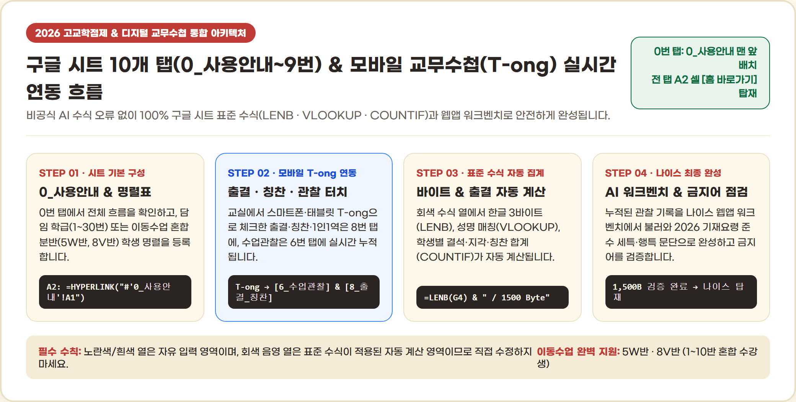
01-1 맨 앞(0번)에 배치된 [0_사용안내] 탭과 전 탭 원클릭 홈 버튼
표준 구글 시트와 엑셀 파일은 선생님께서 열자마자 전체 구조와 입력 규칙을 파악하실 수 있도록 [0_사용안내] 탭을 가장 맨 앞(0번 인덱스)에 배치했습니다.
- 0_사용안내 탭에서 1번~9번의 모든 시트 탭으로 1클릭 이동하는 바로가기 표가 제공됩니다.
- 1번~9번 모든 탭의 2행(고정 행) A2 셀과 최우측 셀에
[홈 · 0_사용안내(설명서)] 링크가 내장되어 있어 어느 탭에서든 즉시 첫 안내 화면으로 돌아올 수 있습니다.
| 시트 탭 이름 | 연동 주체 | 주요 역할 및 동기화 흐름 |
|---|---|---|
| 0_사용안내 | 맨 앞 고정 (홈) | 전체 데이터 흐름 안내, 10개 탭 바로가기 링크, 색상별 셀 입력 규칙 안내 |
| 1_대시보드 | 자동 브리핑 | 학급 전체 인원, 세특·행특 작성률, 상담 건수, 출결·칭찬 누적 현황 자동 집계 |
| 2_학생명렬표 | 공통 마스터 키 | 학번(ID), 성명, 성별, 연락처 및 이동수업 분반(5W반, 8V반 등) 기준 명부 |
| 3_창체_행특 | 양방향 연동 | 자율·동아리·진로 메모 및 T-ong 누적 칭찬·1인1역·출결이 자동 참조되는 행특 시트 |
| 4_대입상담 | 진학 상담 | 희망 계열, 1~3지망 대학·학과, 내신 등급 및 2028 개편 5등급제 자동 환산 |
| 5_상담기록 | T-ong·웹앱 연동 | 학생·학부모 상담 일자, 상담 구분, 상담 요약 및 후속 조치 누적 기록 |
| 6_수업관찰_기록 | T-ong 실시간 | 디지털 교무수첩(T-ong) 학생 팝업에서 입력한 수업 관찰·세특 메모가 즉시 쌓이는 탭 |
| 7_AI세특_작성 | 세특 완성·점검 | 6번 탭의 누적 관찰 기록을 불러와 완성한 교과세특 최종 문단 및 실시간 바이트(LENB) 계산 |
| 8_출결_칭찬_기록 | T-ong 실시간 | 디지털 교무수첩(T-ong)에서 체크한 출석·결석·지각·조퇴·칭찬 포인트·1인1역이 자동 기록되는 탭 |
| _스킬지침 | 규정 기준표 | 2026 학교생활기록부 기재요령 핵심 준수 수칙 및 바이트 상한 기준 보관 |
01-2 구글 시트 내 비공식 =AI 수식 완전 제거 (100% 표준 수식 보증)
시트 셀 안에 =AI_HAENGTEUK()이나 =AI_SETUK() 같은 비공식 함수를 넣으면
할당량 초과나 시트 열람 시 #ERROR!가 발생하는 문제가 있습니다.
- 길을 잃었을 때는 언제든 각 시트 왼쪽 위(A2 칸)의 [홈 · 0_사용안내] 글자를 누르면 첫 안내 화면으로 돌아옵니다.
- 하얀색 칸은 선생님이 입력하는 칸이고, 회색 칸은 시트가 자동으로 계산하는 칸이므로 회색 칸만 지우지 마세요.
1~10반 학생이 섞여 있는 5W반이라도 첫 번째 학번 칸에는 1, 2, 3 대신 학생 본래의 5자리 학번(예: 2학년 1반 5번이면 20105, 2학년 7반 18번이면 20718)을 그대로 적습니다.
수강반 구분 칸에 선생님이 부르시는 반 이름('5W반', '8V반', '2-1반' 등)을 적어 두면, 시트 상단 깔때기(필터) 버튼으로 원하는 분반 학생만 골라 볼 수 있습니다.
교무수첩에서도 학급 이름을 '5W반', '8V반'으로 만들어 명렬표를 넣으면 실제 이동수업 교실 좌석대로 자리를 배치하고 출결·관찰을 기록할 수 있습니다.
선생님께서 실제 사용하시는 명렬표 파일을 주시면 해당 엑셀의 열 구조(수강반, 수업번호, 원적학번, 성명 등)를 그대로 인식하도록 즉시 맞춰 드립니다.
02-1 1반~10반이 섞인 5W반 · 8V반 명렬표 구성 원리
이동수업 분반은 [분반명(학급)]에 5W반, 8V반을 적고,
학생의 [원적 학번](예: 20105, 20312, 20703, 21019) 또는 [분반 출석번호 + 원적학번]으로 등록합니다.
| 분반명 (학급 탭) | 분반 내 번호 | 원적 학번 (공통 키) | 학생 성명 | 성별 | 원적 학급 (비고) |
|---|---|---|---|---|---|
| 5W반 (생명과학I) | 1번 | 20105 | 김민준 | 남 | 2학년 1반 5번 |
| 5W반 (생명과학I) | 2번 | 20312 | 이지은 | 여 | 2학년 3반 12번 |
| 5W반 (생명과학I) | 3번 | 20703 | 박도현 | 남 | 2학년 7반 3번 |
| 8V반 (생명과학I) | 1번 | 20208 | 최서아 | 여 | 2학년 2반 8번 |
| 8V반 (생명과학I) | 2번 | 21019 | 정우진 | 남 | 2학년 10반 19번 |
02-2 디지털 교무수첩(T-ong)에서 5개 분반(5W반, 8V반 등) 전환 및 시트 동기화
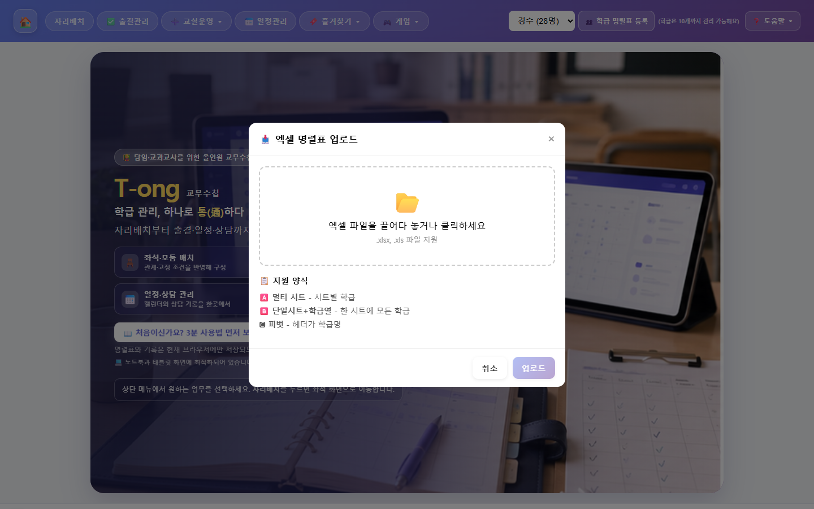
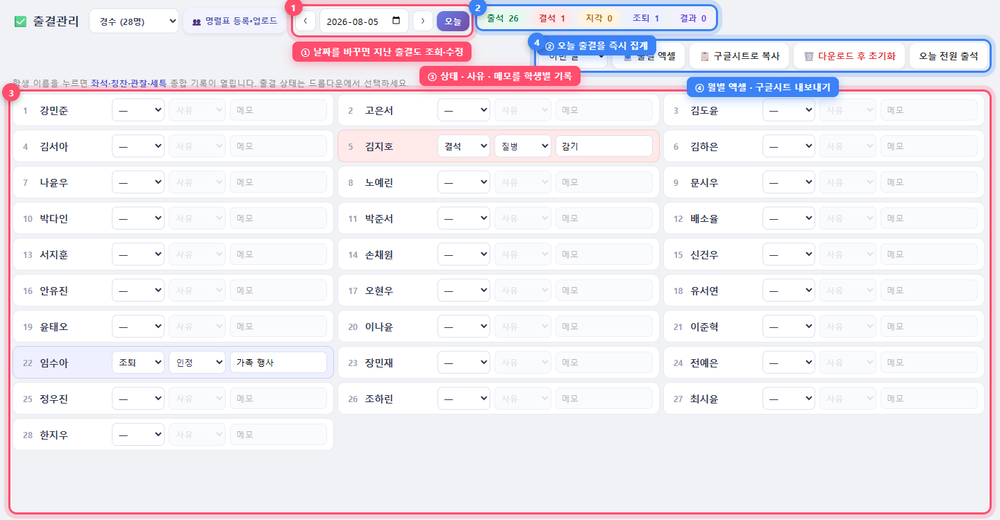
- 이동수업 분반(5W반, 8V반) 학생도 학번 칸에는 반드시 5자리 원래 학번(예: 20312)을 입력합니다.
- 여러 반을 가르치시는 선생님은 수강반 칸에 반 이름을 적어 필터로 골라 보시면 시트 하나로 모든 수업을 관리할 수 있습니다.
교과세특, 자율활동, 동아리활동, 진로활동, 행동특성 중 작성할 항목을 누릅니다. 교과세특을 고르면 과목군 버튼이 나타나 클릭 한 번으로 과목명을 넣을 수 있습니다.
학생을 선택하면 그동안 시트에 적어 둔 세특 내용과 학생의 희망 대학 정보가 화면에 자동으로 나타납니다.
수업 시간에 발표하거나 실험한 내용을 짧게 적고 초안 생성 버튼을 누르면, 나이스 규격(~함, ~임)과 글자 수(1,500바이트)에 맞춘 문단이 완성됩니다.
완성된 문단을 확인한 뒤 저장 버튼을 누르면 내 구글 시트의 세특 탭(7번) 또는 행특 탭(3번)에 자동으로 기록됩니다.
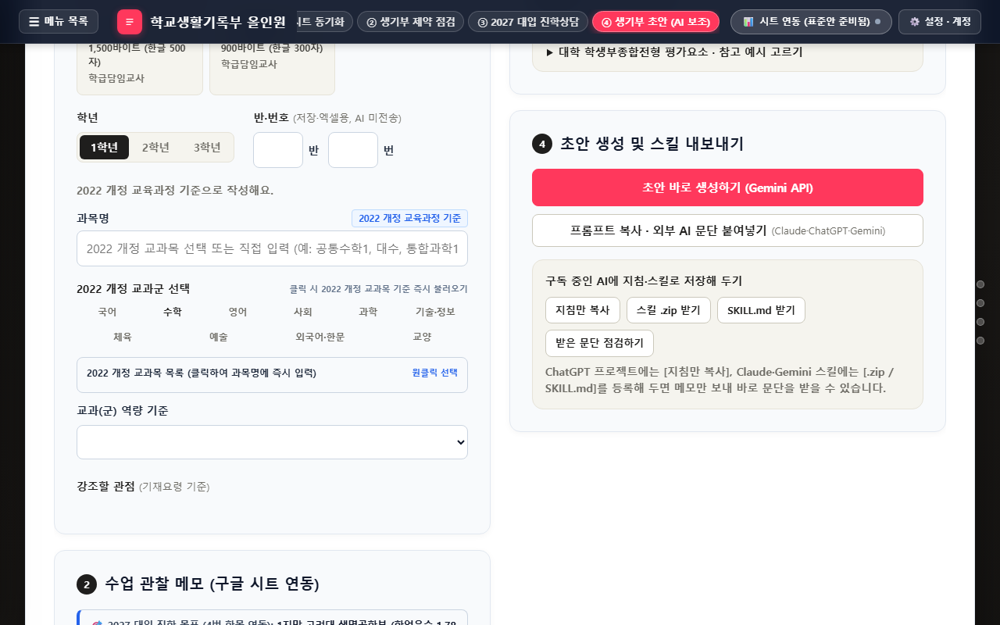
03-1 과목별 세특(과세특) 및 행동특성 생성 3단계
상단 [학생 선택 · 불러오기]를 누르면 모바일 교무수첩(T-ong)에서 기록해 둔 6_수업관찰_기록 탭의 메모와 4_대입상담의 진로 목표가 자동으로 채워집니다.
2022 개정 교육과정 과목별 성취기준과 핵심 역량(비판적 사고력, 문제해결력, 자기주도성 등)을 클릭하여 반영합니다.
API 키로 즉시 생성하거나, [프롬프트 복사] 및 [스킬 .zip / SKILL.md 받기]를 통해 구독 중인 상용 AI에서 기재요령 100% 준수 문단을 도출합니다.
- 평소 교무수첩에 한두 줄씩 적어 둔 메모가 학기 말 완성도 높은 생기부 문단으로 바로 이어집니다.
- 메모에 실수로 학생 이름을 적더라도 화면에서 자동으로 알려주며 버튼 하나로 안전하게 가릴 수 있습니다.
화면 오른쪽 위 설정 메뉴 안에 있는 [보고서 AI 판독] 버튼을 눌러 판독 창을 엽니다.
스마트폰으로 찍거나 스캔한 학생 보고서 이미지 파일(여러 장 가능)을 파란색 점선 상자에 끌어다 놓으면 자동으로 글자를 읽어냅니다.
화면에 나타난 세특 초안 글자를 클릭해 선생님 눈에 맞게 바로 고친 뒤, 초록색 [구글 시트로 저장] 버튼을 누르면 시트에 바로 들어갑니다.

04-1 내 수업 활동지(PDF) 양식에 맞게 프롬프트 변형하는 2단계 절차
선생님마다 활동지의 문항 구성(예: ① 실험 가설 → ② 데이터 분석 → ③ 오차 원인 성찰 vs ① 독서 선정 이유 → ② 사회 문제 연결 → ③ 제언)이 다르므로, 아래 [1단계: 양식 맞춤 변형 프롬프트]로 내 빈 활동지 PDF를 먼저 AI에게 보여주면 선생님 양식에 딱 맞는 전용 프롬프트가 완성됩니다.
나는 고등학교 [과목명 입력, 예: 생명과학I] 교사야. 지금 첨부한 PDF(또는 이미지)는 우리 반 학생들이 작성할 [수행평가 탐구보고서/활동지 빈 양식]이야. 이 활동지의 항목 구조(문항 순서와 평가 요소)를 정확히 반영해서, 나중에 학생들이 손글씨나 텍스트로 작성해 제출한 보고서 30장을 올렸을 때 각 항목의 핵심 내용을 빠짐없이 읽고 2026 나이스 교과세특(한글 450~500자, 1,420~1,480바이트) 문단과 구글 시트 붙여넣기용 마크다운 표([학번 | 성명 | 탐구주제 | 탐구과정 요약 | 나이스 세특 초안])로 일괄 출력해 주는 '내 수업 전용 맞춤형 마스터 프롬프트'를 작성해 줘.
당신은 대한민국 고등학교 학교생활기록부 '교과세부능력 및 특기사항(교과세특)' 기재요령 전문가이자 문서 OCR 정밀 판독 AI입니다. 첨부된 학생들의 탐구보고서(활동지) 이미지를 정밀 판독하여, 구글 스프레드시트 및 엑셀에 바로 붙여넣을 수 있는 [마크다운 표] 형식으로 일괄 추출하고 2026 나이스 훈령을 엄격히 준수한 교과세특 초안을 작성해 주세요. [출력 표 열 구성] | 학번 | 성명 | 과목 | 탐구주제 | 핵심 탐구과정 메모(6번 시트용) | 나이스 세특 완성본(7번 시트용, 450~500자) | [필수 기재 원칙] 1. 3단 구조: [수업 단원 연계 탐구 동기] -> [구체적 실험·자료분석·문제해결 과정] -> [학업적 성장 및 심화 확장] 2. 금지어 배제: 교외 수상, 공인어학시험, 대학명, 논문 투고, 부모 직업 등 나이스 기재 금지 표현 원천 차단 3. 명사형 종결어미: '~을 분석함.', '~을 도출함.', '~한 역량을 보임.' 등 나이스 표준 종결어미 통일
- 한 학급 25~30명 분량의 종이 보고서도 사진만 찍어 올리면 타자 입력 시간을 크게 줄일 수 있습니다.
화면 위쪽 메뉴에서 두 번째 [생기부 제약 점검] 탭을 누릅니다.
점검할 영역(세특·창체·행특)을 고르고 내가 쓴 문단을 입력창에 붙여넣으면 그 즉시 글자 수(바이트)와 금지어 결과가 나타납니다.
금지어가 발견되면 왜 안 되는지(기재요령 근거)와 어떤 단어로 바꾸면 좋은지(대체 표현)를 바로 아래에서 안내해 줍니다.

05-1 2026학년도 영역별 나이스 글자수 · 바이트 상한 기준표
| 생기부 영역 | 나이스 기준 글자수 | 나이스 허용 바이트 | 권장 안전 범위 (줄바꿈 포함) |
|---|---|---|---|
| 자율·자치활동 | 500자 | 1,500 Byte | 1,400 ~ 1,480 Byte |
| 동아리활동 | 500자 | 1,500 Byte | 1,400 ~ 1,480 Byte |
| 진로활동 | 700자 | 2,100 Byte | 1,950 ~ 2,060 Byte |
| 교과세특 (과목별) | 500자 | 1,500 Byte | 1,400 ~ 1,480 Byte |
| 행동특성 및 종합의견 | 300자 ~ 500자 | 900 ~ 1,500 Byte | 학년도별 상한 기준 자동 적용 |
- 나이스에 최종 입력하기 전에 이 화면에 한 번만 붙여넣어 확인하면 학기 말 기재 오류 걱정을 덜 수 있습니다.
학생의 내신 등급과 모의고사 성적을 입력하거나 시트에 저장된 학생 정보를 불러옵니다.
희망하는 계열(자연·공학·인문·의약학 등)이나 대학 이름을 검색해 최근 입결 기준(안정·적정·소신)과 수능 최저 기준을 확인합니다.
상담 요약과 앞으로의 학습 계획을 적고 저장하면 내 구글 시트의 [4_대입상담] 및 [5_상담기록] 탭에 그대로 저장됩니다.

- 대학별 입시 요강 책을 일일이 찾지 않아도 한 화면에서 내신·최저 기준을 비교하며 학생·학부모 상담을 진행할 수 있습니다.
대시보드 맨 위 STEP 1 [Google 시트 통합 연동] 카드(또는 상단 1 Google 시트 연동 메뉴)에 내 마스터 시트 웹앱 URL(https://script.google.com/.../exec)을 먼저 붙여넣고 연결합니다. 스마트폰·태블릿에서 열었을 때도 이 단계에서 [불러오기 (Pull)]만 누르면 PC 시간표와 명렬표가 즉시 복원됩니다.
시트가 연결된 상태에서 2 학교·수업시간표로 이동해 우리 학교, 담임 반(또는 담임 없음·교과전담), 학급별 개설 과목, 창체 동아리를 선택하면 내 주간 시간표가 완성되고 구글 시트(9_교무수첩_시간표_동기화)에 자동 저장됩니다.
수업 중 기록한 출결·칭찬·관찰 메모가 실시간으로 내 구글 시트(6·8번 탭)에 쌓이며, neis-help-one.vercel.app에서도 같은 시트를 열어 세특·행특 초안을 바로 생성할 수 있습니다.
07-1 상단 [Google 연동] 패널 — 구글 시트 10개 탭 & Google 캘린더 1클릭 연결
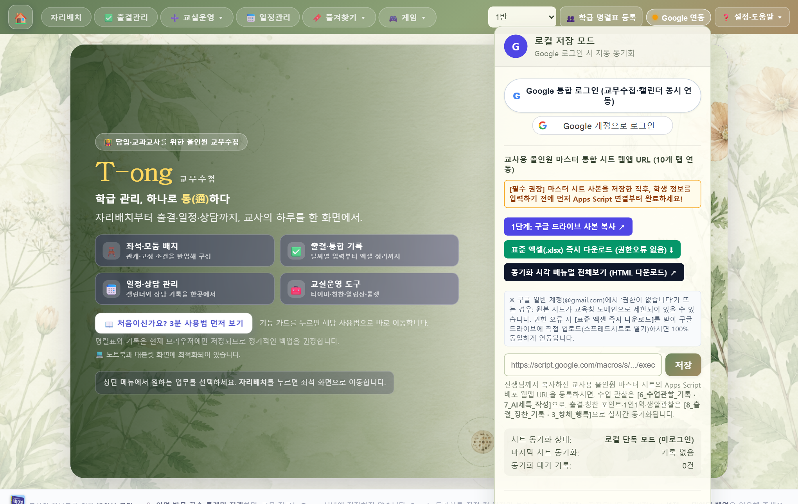
- Google 통합 로그인: 버튼 한 번으로 교무수첩과 Google 기본 캘린더 권한을 함께 연결합니다.
- 1단계 구글 드라이브 사본 복사 & 표준 엑셀 다운로드: 일반
@gmail.com계정에서 사본 복사 권한 안내가 뜰 경우, 초록색 [표준 엑셀(.xlsx) 즉시 다운로드]를 받아 내 구글 드라이브에 올리면 100% 동일하게 연동됩니다. - 마스터 시트 웹앱 URL 저장: 복사한 시트의 Apps Script 배포 URL(
https://script.google.com/macros/s/.../exec)을 입력하고 [저장]을 누르면 실시간 동기화가 시작됩니다. - 캘린더 계정 분리 지원: 학교 업무용 시트 계정과 개인 스마트폰 캘린더 계정이 다를 때 [캘린더만 다른 계정 변경]으로 분리 연결할 수 있습니다.
07-2 상단 [설정·도움말] 9가지 감성 테마 & [홈] 메뉴 구성
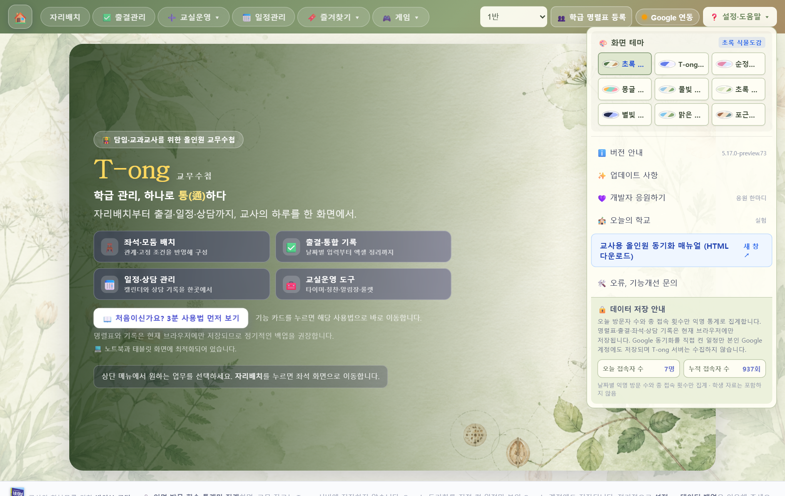
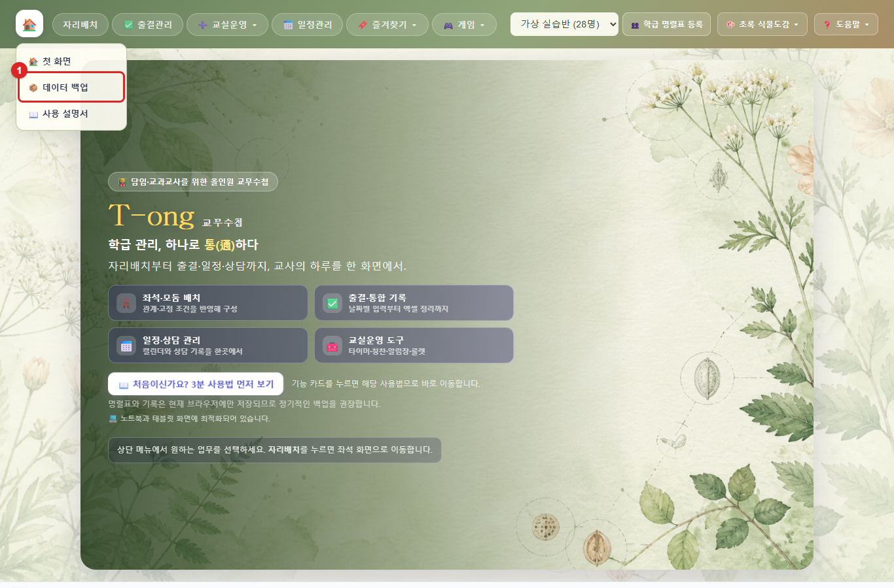
07-3 좌측 접이식 메뉴 & 우측 좌석 설정 패널
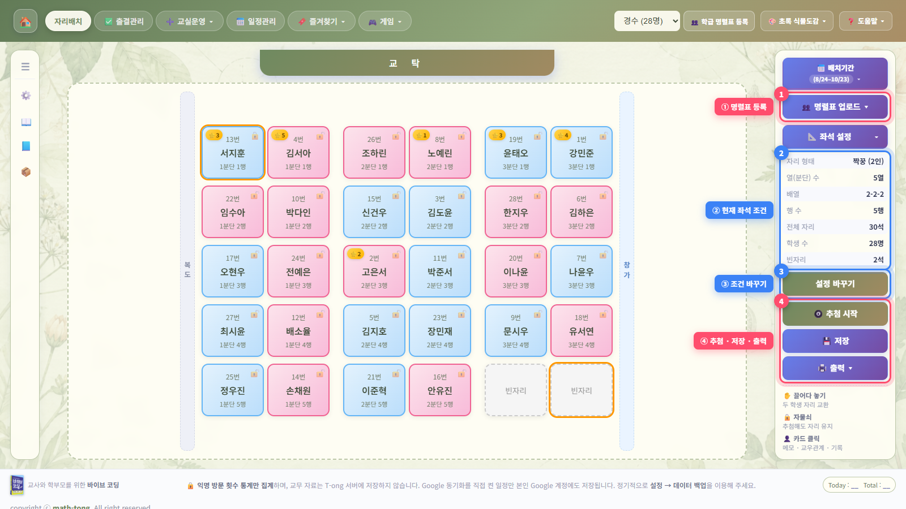
- 나이스 생기부 웹앱에서 쓰던 구글 시트 연결 주소(URL)를 교무수첩에도 똑같이 붙여넣으면 두 프로그램이 하나로 연결됩니다.
교무수첩 오른쪽 위 [시트 연결 설정] 창을 열고 파란색 [시트에서 명렬·기록 불러오기(Pull)] 버튼만 누르면 시트에 있는 학생 명단이 수첩으로 자동 등록됩니다.
교무수첩 왼쪽 [학급 설정 / 명렬표] 메뉴에서 [엑셀 업로드]를 눌러 학생 명단 엑셀 파일을 올린 뒤, [시트로 지금 전송(Push)]을 누르면 구글 시트 [2_학생명렬표]에도 똑같이 학생 명단이 채워집니다.
상단 학급 선택 칸에서 새 수업 반(예: '2-3반', '5W반_생명')을 추가하면 각 반별로 명렬표와 좌석표를 따로 관리할 수 있습니다.
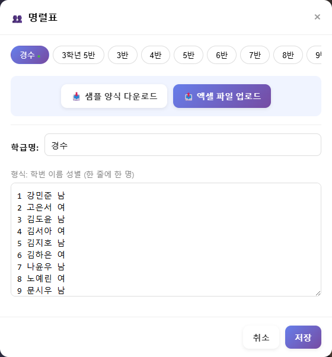
학번 이름 성별(예: 1 홍길동 남 또는 20312 이지은 여) 형식으로 적으면 남학생(파랑)·여학생(분홍)이 자동 구분됩니다.
08-1 엑셀 명렬표 3가지 양식 자동 인식 (드래그 앤 드롭)
- 지원 양식 ① 시트별 학급: 엑셀 파일 안에
1반,2반또는5W반,8V반시트가 각각 나뉘어 있는 양식 - 지원 양식 ② 학급 열이 있는 한 장짜리: 한 시트 안에
학급(분반) | 번호(학번) | 이름 | 성별열이 함께 들어 있는 양식 - 지원 양식 ③ 헤더가 학급명인 피벗형: 1행 헤더에
1반 | 2반 | 3반 ...학급명이 가로로 나열되고 아래로 학생 이름이 적힌 양식 - 올인원 구글 시트 연동: 상단 [Google 연동]이 켜져 있으면, 마스터 구글 시트의 [2_학생명렬표] 탭과 학생 학번·성명이 자동으로 양방향 바인딩됩니다.
- 구글 시트에 먼저 넣든 교무수첩에 먼저 넣든 한쪽에만 입력하고 동기화 버튼을 누르면 두 곳에 모두 들어갑니다.
분단 수나 모둠 모양을 고른 뒤 [랜덤 배치]를 누르거나 학생 이름 카드를 마우스로 끌어 원하는 자리에 놓습니다.
상단의 [교탁 시점] 버튼을 누르면 위아래가 뒤집혀 선생님이 교탁에서 교실을 바라보는 방향과 똑같이 좌석이 보입니다.
수업 중 기록하고 싶은 학생의 좌석 카드를 클릭해 한 줄 메모를 남기면, 내 구글 시트 [6_수업관찰_기록] 탭에 날짜·학번·이름과 함께 자동 저장됩니다.
09-1 자리배치 3단계 시작 마법사 & 4·5·6인 모둠 배치
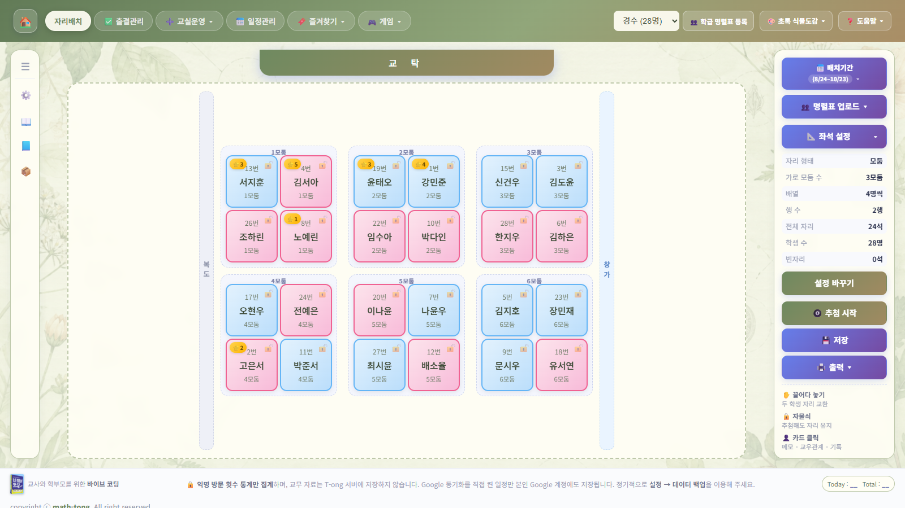
09-2 좌석표 읽는 법 · 학번 가로/세로순 배치 · 같은 성별 우선 배치
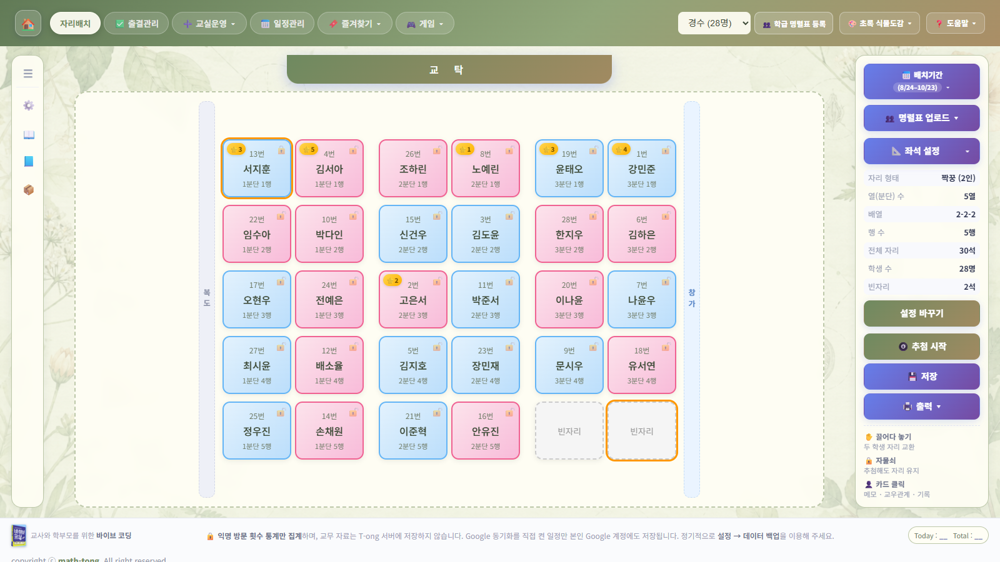
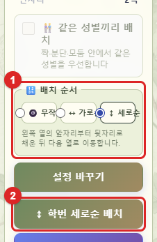
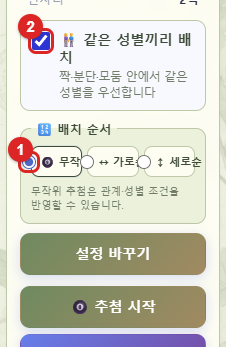
09-3 3·2·1 추첨 무대 연출 & 학생 메모 · 교우 관계 · 고정석 · 교탁 시점
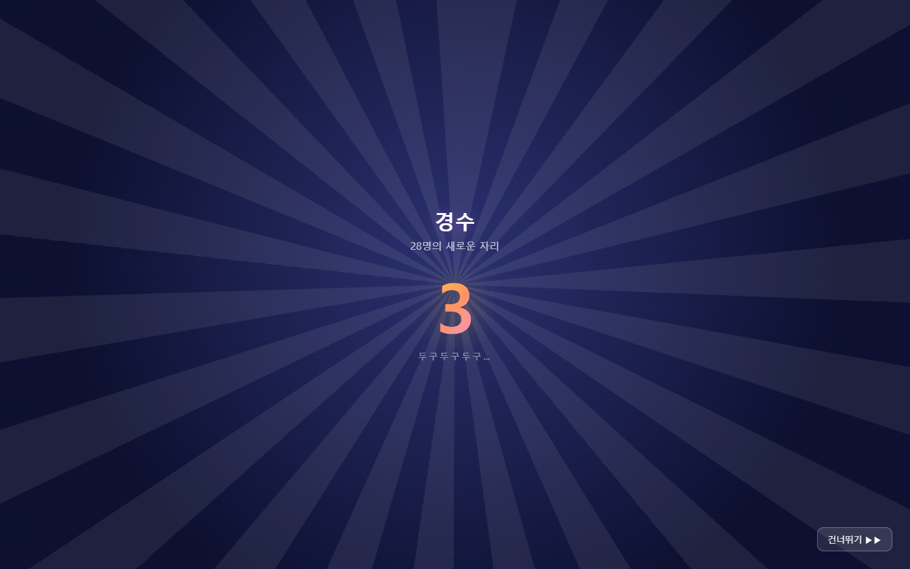
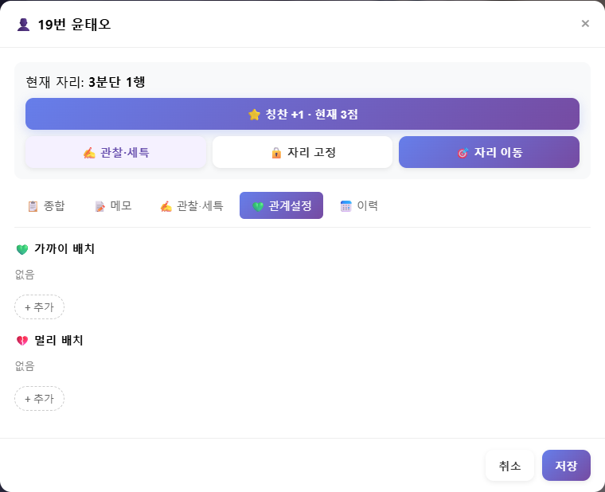
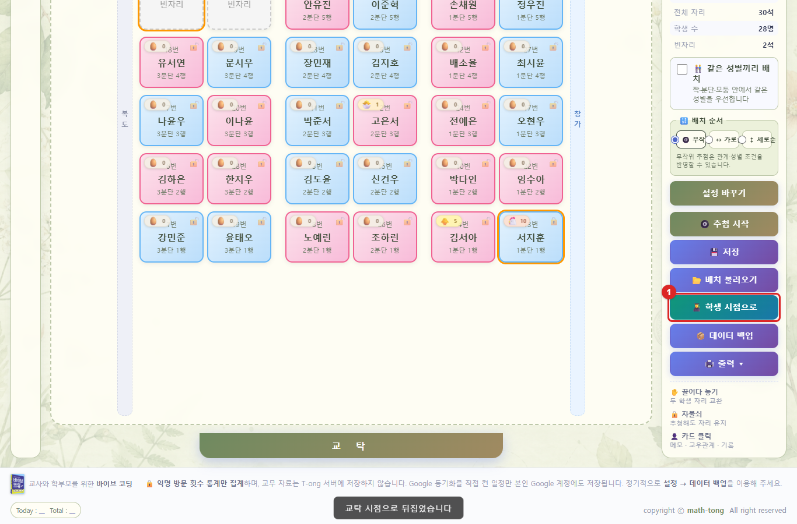
09-4 배치 이력 저장·복원 · 한 학기 짝 누가기록 엑셀 · 좌석표 인쇄
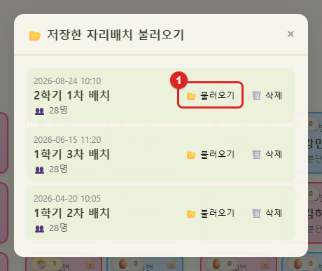
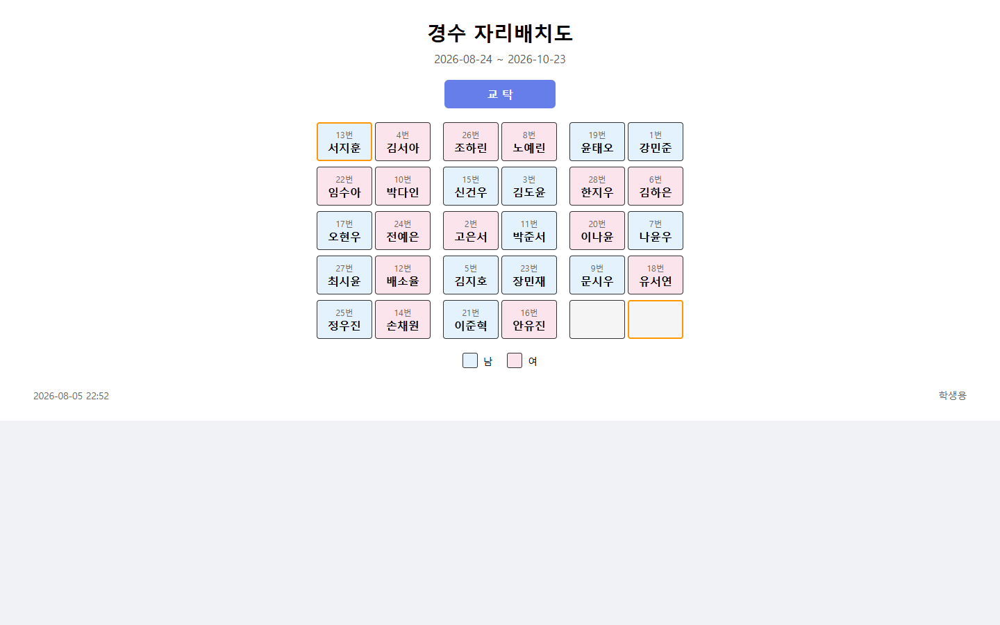
- 학생 얼굴과 이름이 낯선 학기 초나 이동수업 시간에도 앉아 있는 자리만 보고 즉시 정확한 세특 메모를 남길 수 있습니다.
달력에서 오늘 날짜가 선택되어 있는지 확인하고 출결 특이사항이 있는 학생을 찾습니다.
버튼을 눌러 출결 상태를 고르고 '감기 몸살(진료확인서 제출)'처럼 간단한 사유를 적어 저장합니다.
저장하는 즉시 내 구글 시트 [8_출결_칭찬_기록] 탭에 날짜·학번·이름·출결구분·사유가 한 줄씩 차곡차곡 기록됩니다.
10-1 자리배치에서 바로 출결 등록 & 학생 종합 기록 팝업 (칭찬 · 관찰 · 세특)
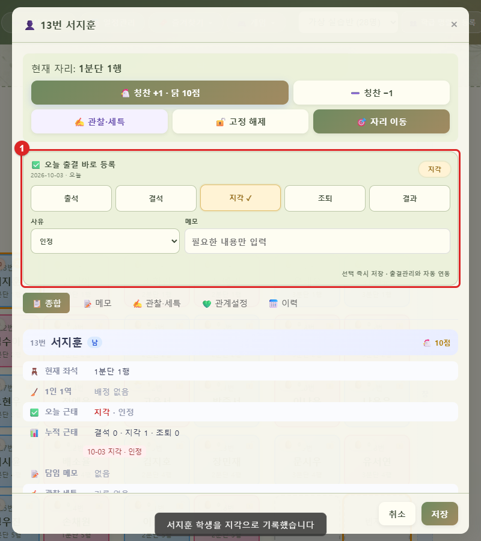
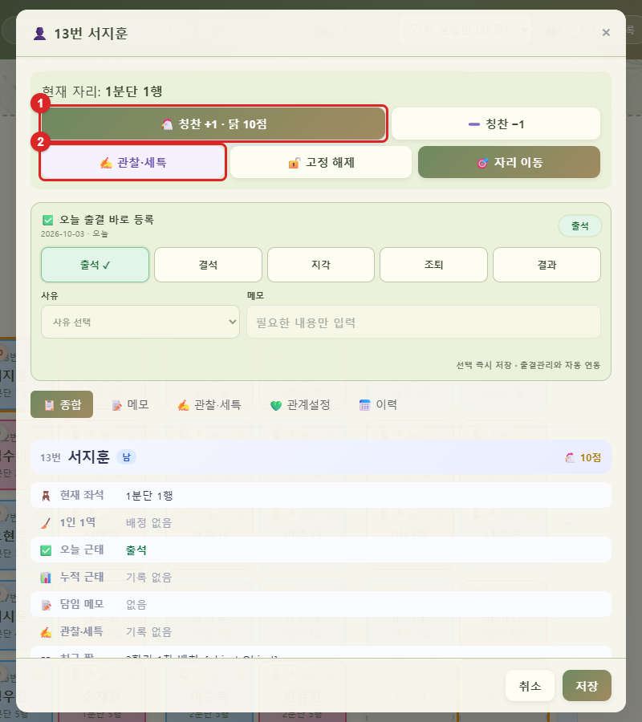
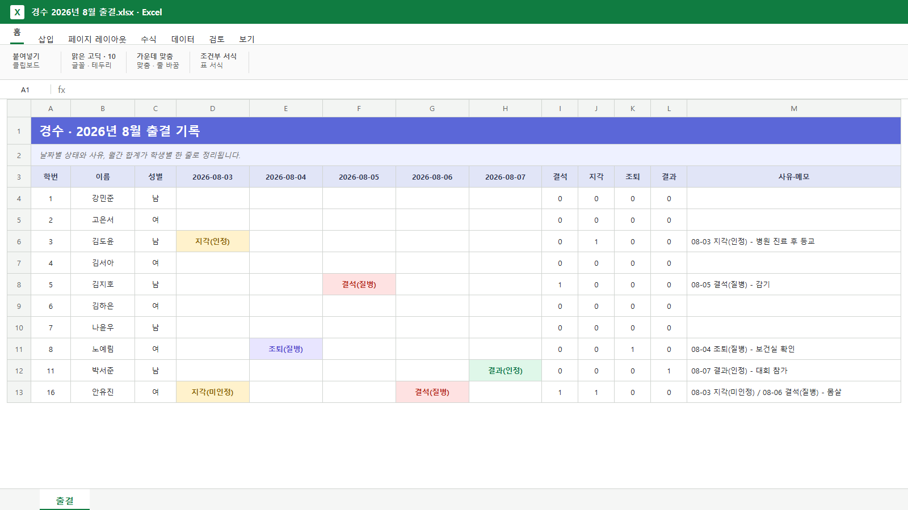
10-2 [핵심] 디지털 교무수첩(T-ong) 입력 항목 ↔ 구글 시트 10개 탭 자동 동기화 매핑표
선생님께서 T-ong에서 터치하거나 입력한 자료가 마스터 구글 시트의 어느 탭, 어느 열로 들어가고, 어느 회색 수식 열이 자동으로 계산되는지 정확히 안내합니다.
| T-ong 교무수첩 입력 기능 | 구글 시트 수신 탭 | 자동 기록되는 열 (노란색/흰색) | 연계 작동하는 회색 수식 열 (수정 금지) |
|---|---|---|---|
| 출결 체크 (결석·지각·조퇴·결과 + 사유/메모) |
8_출결_칭찬_기록 | 기록일시, 학번, 성명, 구분(출결), 상세내용(질병결석 등), 사유메모 | [3_창체_행특] 및 [1_대시보드]의 학생별 출결 요약(COUNTIF) 자동 갱신 |
| 칭찬 포인트 (+1 / -1) (알 → 부화중 → 병아리 → 닭) |
8_출결_칭찬_기록 | 기록일시, 학번, 성명, 구분(칭찬), 누적 점수 및 성장 단계 | [3_창체_행특]의 칭찬·1인1역 요약 열에 자동 반영되어 행특 초안 재료로 활용 |
| 1인 1역 배정 (직접 배정 / 무작위 배정) |
8_출결_칭찬_기록 | 학번, 성명, 구분(1인1역), 담당 역할명(예: 칠판 담당, 분리수거) | [3_창체_행특] 자율·인성 기초 자료에 자동 결합 |
| 학생 팝업 → [관찰·세특] (수업 발표·실험·태도 메모) |
6_수업관찰_기록 | 날짜, 과목(분반), 학번, 성명, 영역/단원, 수업 관찰 원문 | [7_AI세특_작성] 및 나이스 웹앱 워크벤치로 즉시 불러와 1,500B 세특 완성 |
| 일정관리 → [상담] 속성 기록 (학생·학부모 상담 내용/후속조치) |
5_상담기록 | 상담일자, 학번, 성명, 상담대상, 상담방식, 상담내용, 후속조치 | [1_대시보드] 누적 상담 건수 및 학생별 상담 이력 자동 집계 |
- 종이 출석부에 적고 나중에 다시 엑셀에 옮겨 적을 필요 없이, 교실에서의 터치 한 번으로 시트 정리가 끝납니다.
모둠 활동이나 시험 시간에는 타이머를, 조회·종례 시간에는 오늘의 알림장을 교실 큰 화면에 띄워 둡니다.
친구를 돕거나 청소를 열심히 한 학생을 눌러 칭찬 스티커와 짧은 이유(예: '실험 기구 정리를 솔선수범하여 도맡아 함')를 적습니다.
분리수거, 칠판 관리, 우유 당번 등 각자 맡은 1인1역 역할을 등록해 두면 구글 시트 [8_출결_칭찬_기록]을 거쳐 [3_창체_행특] 탭에 자동으로 요약됩니다.
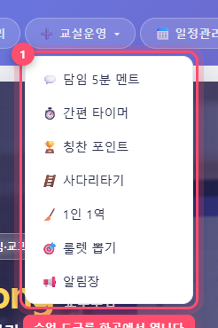
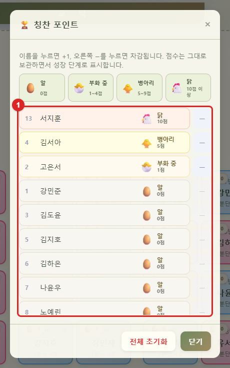
11-1 전체화면 모래시계 타이머 · 교실 TV용 오늘의 알림장 · 1인 1역 엑셀 배정
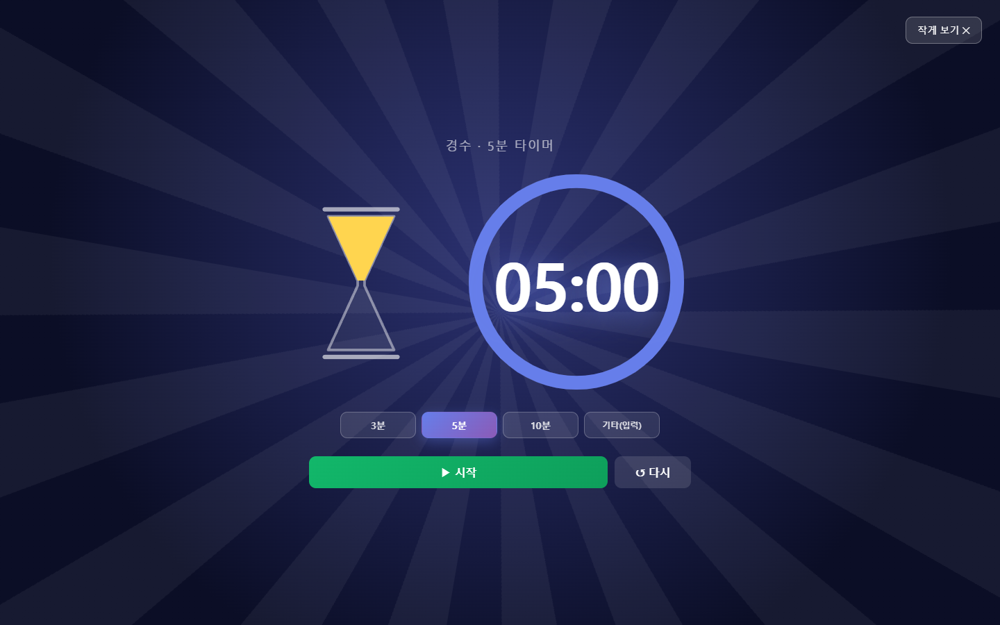
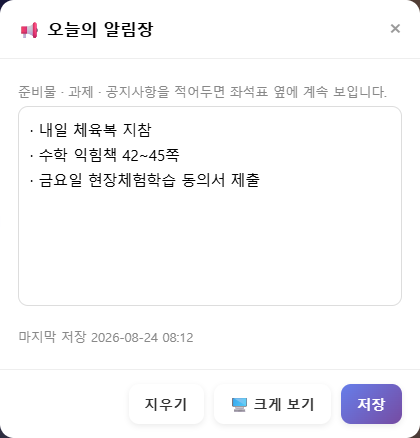
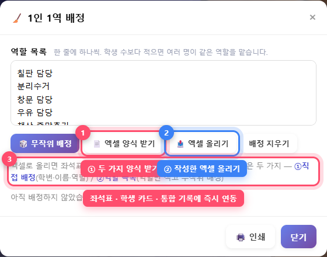
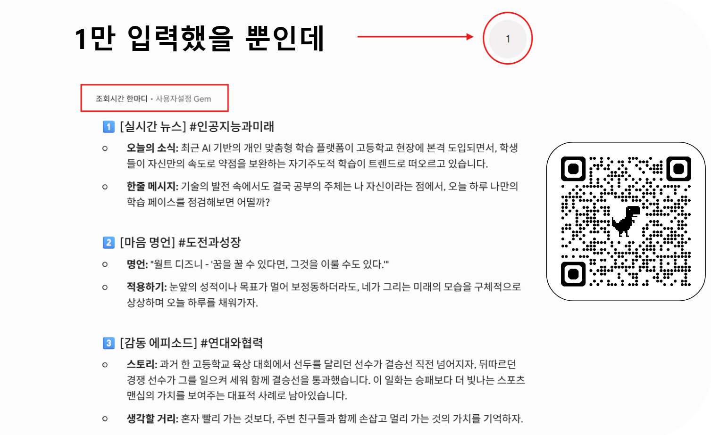
- 학기 말에 '이 학생 행특에 뭘 써주지?' 고민할 필요 없이, 평소 눌러 둔 칭찬과 1인1역이 그대로 행특 문단이 됩니다.
달력의 날짜를 클릭해 시험 기간, 수행평가 마감일, 공문 제출일 등을 적어 두고 완료한 일은 체크 표시합니다.
구글 로그인을 연결하면 내 스마트폰 구글 캘린더 일정과 교무수첩 달력을 함께 볼 수 있습니다.
상담한 날짜, 학생 이름, 상담 내용(진로·학업·교우관계)을 적어 저장하면 시트 동기화 시 구글 시트에도 안전하게 보관됩니다.
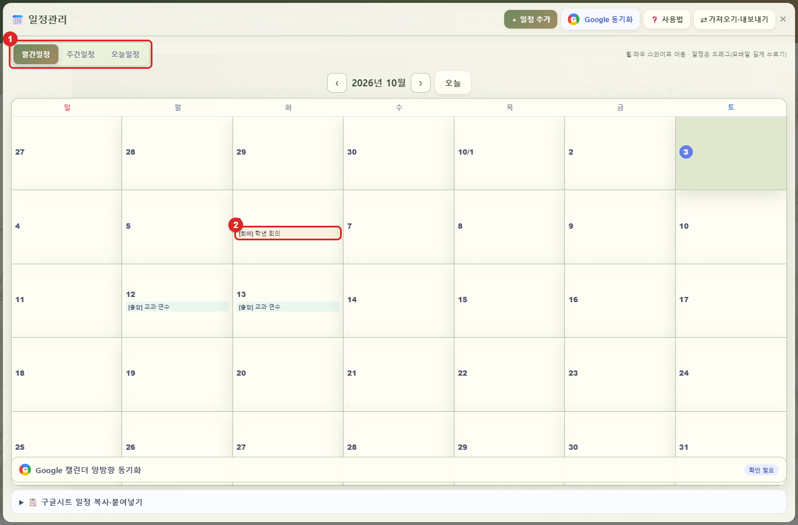
12-1 [상담] · [출장] · [회의] 속성 관리 & 상담 기록 엑셀·구글시트 내보내기
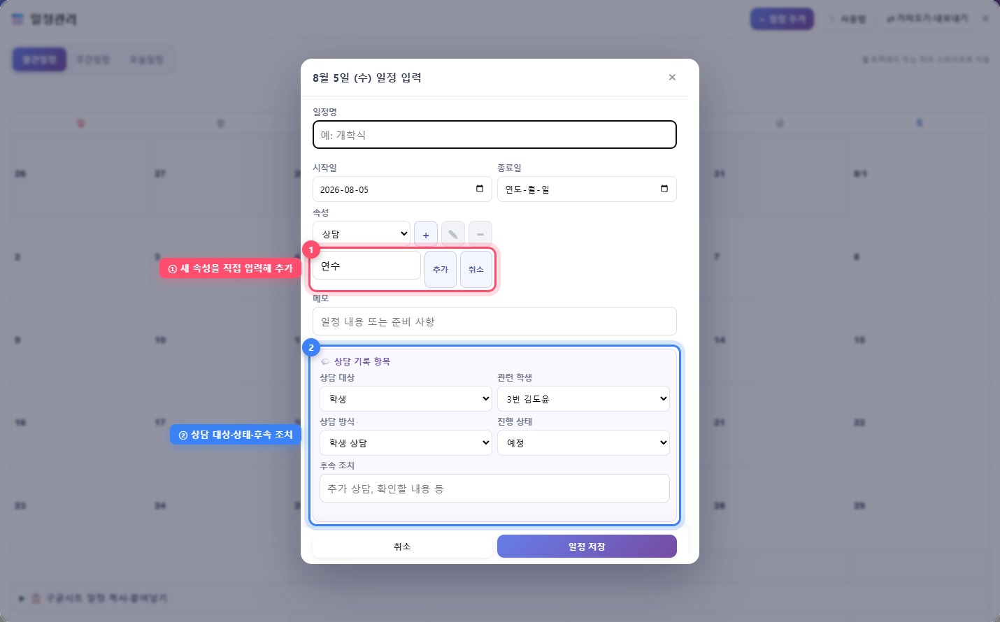
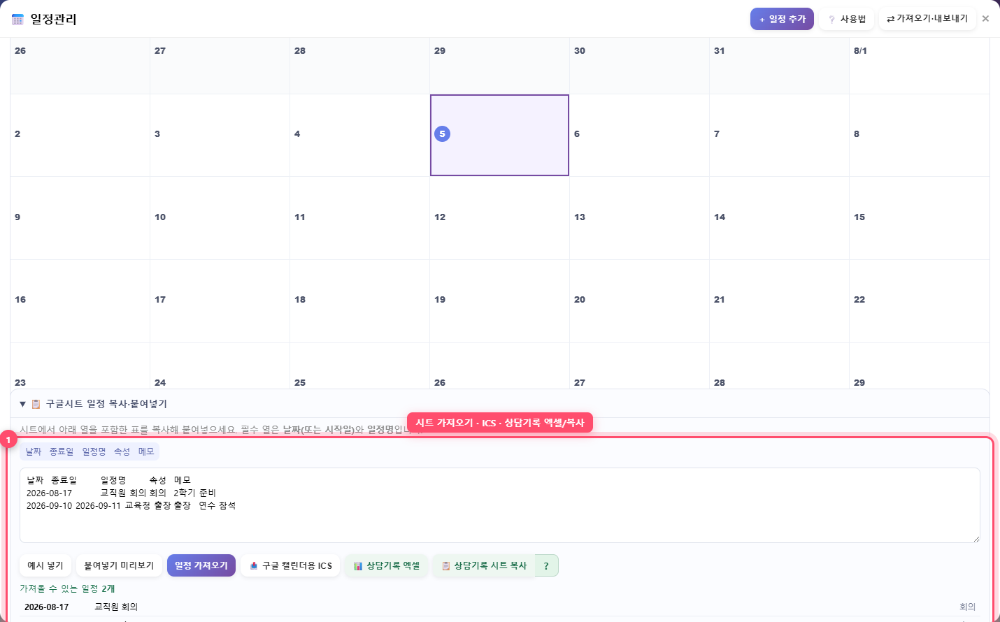
12-2 Google 기본 캘린더 양방향 자동 동기화 & 개인정보 보호 원칙
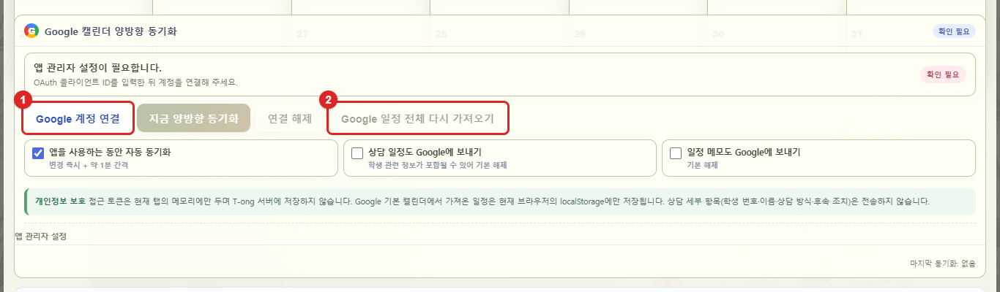
- 학부모 상담 주간에 학생 이름만 클릭하면 그동안의 출결, 칭찬, 수업 태도, 이전 상담 내역을 한눈에 보며 상담할 수 있습니다.
나이스, 에듀파인, 클래스룸 등 자주 여는 주소를 등록해 교무수첩 첫 화면에서 바로 클릭해 이동합니다.
우리 학교 이름을 검색해 지정해 두면 매일 점심·저녁 급식 메뉴가 자동으로 표시됩니다.
구글 시트 자동 동기화를 켜 두시면 기록이 시트에 실시간 저장되며, 추가로 [JSON 백업 파일 다운로드]를 받아 두시면 이중으로 안전합니다.
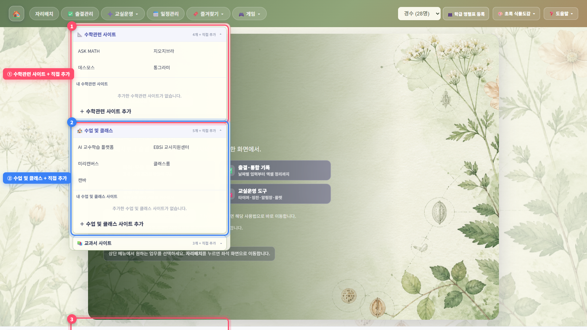
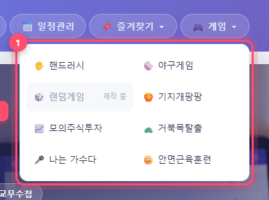
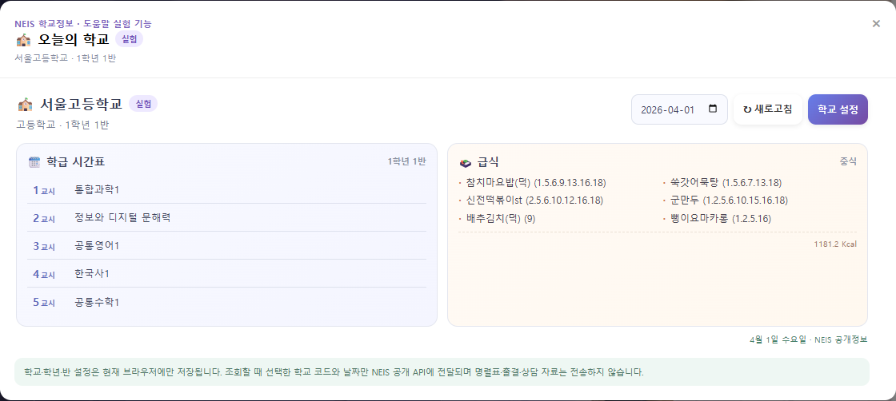
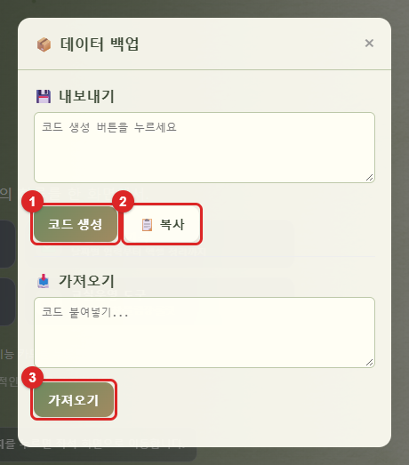
- 구글 시트 연동과 백업 파일 기능을 함께 쓰면 1년 동안 기록한 소중한 학급 자료가 사라질 걱정이 전혀 없습니다.
교무수첩에서 학생 명단을 넣고 전송(Push)하면 시트 2번 탭에 자동으로 들어가고, 반대로 시트 2번 탭에 먼저 적은 명단도 교무수첩으로 그대로 불러올(Pull) 수 있습니다.
수업 중 좌석을 눌러 적은 관찰 메모는 시트 6번 탭에 차곡차곡 쌓이며, 시트 7번 탭(AI세특)이 이 내용을 학생별로 자동 합쳐서 나이스 웹앱으로 넘겨줍니다.
아침 조회 출결과 칭찬 스티커, 1인1역은 시트 8번 탭에 자동 기록되며, 시트 3번 탭(창체·행특)이 이 횟수와 내용을 자동으로 요약해 줍니다.
나이스 웹앱에서 완성한 행특·창체는 3번 탭에, 대입 상담은 4·5번 탭에, 교과세특 완성본은 7번 탭에 즉시 저장됩니다.
- 노란색/흰색 열 (교사 입력): 선생님께서 직접 타이핑하거나 붙여넣는 자유 입력 영역입니다.
- 파란색/연녹색 열 (T-ong · 웹앱 동기화): 디지털 교무수첩(T-ong)이나 나이스 웹앱에서 전송된 기록이 자동 누적되는 영역입니다.
- 회색 음영 열 (수정 금지 · 자동 수식): 글자 수 자동 계산, 학생 이름 자동 찾기, 횟수 자동 합산 등 표준 수식이 걸려 있으므로 수동으로 지우거나 덮어쓰지 마세요.
14-1 10개 탭 전체 열(Column) 구조 및 회색 수식열 상세 매핑표
| 탭 이름 | 교사 입력 / 모바일 수신 열 (자유 입력) | 회색 음영 수식 열 (절대 수정 금지) | 적용된 표준 수식 역할 |
|---|---|---|---|
| 0_사용안내 | 안내문 및 탭 이동 버튼 전용 | 전체 내비게이션 하이퍼링크 셀 | 1~9번 각 탭으로 1클릭 이동하는 HYPERLINK |
| 1_대시보드 | 학교명·학년·반 기본 설정 | 전체 집계 카드 및 학생별 요약 행 | 2~8번 탭의 작성 건수·출결·상담 현황 실시간 집계 |
| 2_학생명렬표 | 학번(ID), 성명, 성별, 분반(5W/8V 등), 진로키워드 | 출결·상담·관찰 누적 건수 확인 열 | 모든 탭의 학생 이름 자동 찾기 기준이 되는 마스터 키 |
| 3_창체_행특 | 자율·인성 메모, 동아리·진로 메모, 강점 키워드, 행특 초안 | 성명(B열), 교무수첩 누적 요약(F열), 바이트 계산(H열) | 8번 탭의 출결·칭찬·1인1역 요약 결합 및 글자 수 자동 계산 바이트 계산 |
| 4_대입상담 | 희망 계열, 1~3지망 대학·학과·전형, 9등급 내신, 모의고사 | 성명(B열), 2028 개편 5등급 환산(I열), 창체 연계 요약(K열) | 9등급 내신을 2028 개편 5등급제로 자동 변환 및 3번 탭 참조 |
| 5_상담기록 | 상담일자, 학번, 구분(진학/학업/생활), 상담 요약, 후속조치 | 성명(C열, 학번 입력 시 자동 매칭) | 2_학생명렬표 기준 성명 자동 호출 (학생 이름 자동 찾기) |
| 6_수업관찰_기록 | 날짜, 과목(분반), 학번, 단원/영역, 수업 관찰 메모(T-ong 수신) | 성명(D열, 학번 입력 시 자동 매칭) | 모바일 T-ong 수업관찰 메모 누적 및 성명 자동 매칭 |
| 7_AI세특_작성 | 학번, 과목명, 심화 탐구활동 메모, 세특 완성 문단 | 성명(B열), 6번 탭 관찰 자동집계(E열), 바이트검증(H열) | 6번 탭 관찰 기록 자동 참조 및 LENB & " / 1500B" 검증 |
| 8_출결_칭찬_기록 | 기록일시, 학번, 구분(출결/칭찬/1인1역), 상세내용, 사유메모 | 성명(C열), 3번 행특 탭 자동 반영 상태(G열) | 모바일 T-ong 출결·칭찬·1인1역 실시간 적립 및 3번 탭 연동 |
| _스킬지침 | 학교별 추가 기재 원칙 메모 가능 | 2026 교육부 기재요령 핵심 기준 셀 | 금지어·종결어미·바이트 상한 기준 보관 |
- 10개 탭을 다 외우실 필요가 없습니다. 맨 앞 [0_사용안내] 탭에서 원하는 탭 이름을 클릭하면 바로 이동합니다.
- 선생님이 직접 타이핑하실 일은 맨 처음 [2_학생명렬표]에 학번·이름을 넣는 것뿐이며, 나머지는 앱에서 버튼만 누르면 시트에 자동으로 채워집니다.
선생님 반 학생들의 소중한 기록을 다른 회사 서버가 아닌 '선생님 개인 구글 드라이브 시트'에만 안전하게 저장하기 위해서입니다. 처음 딱 한 번(1분)만 연결해 두시면 학기 내내 자동으로 작동합니다.
네, 100% 정상입니다! 선생님 본인이 직접 내 시트에 만든 연결 통로이기 때문에 뜨는 안내창입니다. 당황하지 마시고 왼쪽 아래 작은 글씨 [고급]을 누른 뒤 맨 아래 [이동] -> [허용]을 차례대로 누르시면 됩니다.
[새 배포] 창에서 '액세스 권한이 있는 사용자' 항목을 반드시 [모든 사용자]로 골라 주셔야 스마트폰과 교무실 컴퓨터 웹브라우저에서 막힘없이 시트로 글자가 전송됩니다.
바로 아래의 [AI 에이전트에게 자동 배포 맡기기] 상자에 있는 글자를 복사해 제미나이(Gemini)나 주변 선생님께 보여주시면 1분 만에 대신 연결해 드릴 수 있습니다. (학생 이름을 넣기 전 빈 시트 상태에서 진행하세요.)
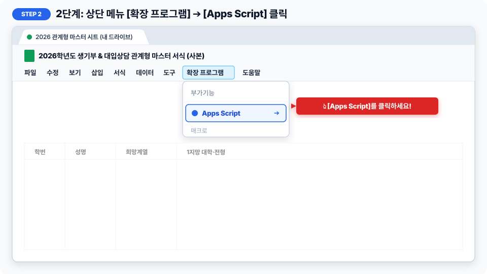
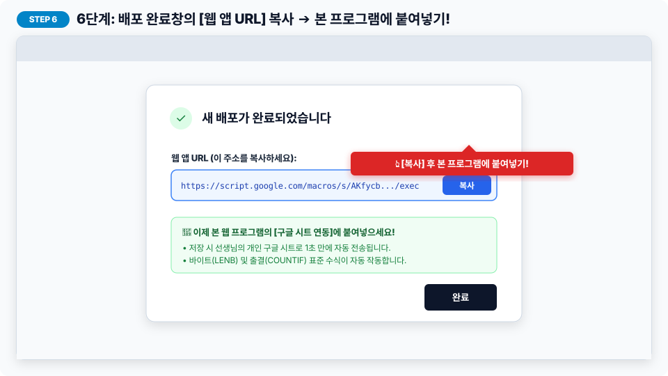
15-1 통합 Apps Script 코드 (원클릭 클립보드 복사)
아래 코드는 나이스 생기부 웹앱과 디지털 교무수첩(T-ong)의 출결·칭찬·1인1역·수업관찰·상담기록 10개 탭 동기화 및 관리자 가입 승인을 모두 처리하는 통합 코드입니다.
/**
* =========================================================================================
* [2026-2027 학교생활기록부 · 진학상담 · 모바일 교무수첩] 교사용 올인원 마스터 통합 Apps Script 엔진
* =========================================================================================
*
* 1. 커스텀 함수 제공:
* - =AI(프롬프트, 활동내용, [추가맥락], [지침셀]): 셀 안에서 Gemini API 즉시 호출
* - =AI_SETUK(과목명, 탐구활동내용, 희망진로, [지침셀]): 과목별 세부능력 및 특기사항 초안 자동 생성
* - =AI_HAENGTEUK(성명, 자율인성메모, 동아리진로메모, 강점키워드, [지침셀]): 행동특성 및 종합의견 초안 생성
* - =NEIS_BYTES(텍스트): 교육부 나이스 바이트 수(한글 3B, 영문/숫자 1B, 엔터 2B) 자동 계산
*
* 2. 올인원 마스터 통합 시트 동기화 API (Web App):
* - 0_사용안내 ~ 8_출결_칭찬_기록, _스킬지침 (총 10개 탭) 학번(ID) 기준 유기적 자동 연동
* - 모바일 교무수첩(T-ong) 수업관찰 -> 6_수업관찰_기록 & 7_AI세특_작성 자동 반영
* - 모바일 교무수첩(T-ong) 출결·칭찬·1인1역·학생관찰 -> 8_출결_칭찬_기록 & 3_창체_행특 자동 반영
*
* 3. 시각 서식 구분 및 표 접기/펼치기 자동 구성:
* - [교사입력] 굵은 테두리 + 연노랑 음영 / [AI자동] 연파랑 음영 / [자동연동] 회색 음영
* - 긴 표(학생 명단 하위 행 및 수시 4~6지망 열) 접기/펼치기([+]/[-]) 그룹 자동 설정
*/
// ==========================================
// [설정] 개인 Gemini API 키 등록 (시트 메뉴에서 입력 가능)
// ==========================================
function getGeminiApiKey() {
var props = PropertiesService.getScriptProperties();
var key = props.getProperty("GEMINI_API_KEY");
if (!key) {
key = "AIzaSy_YOUR_API_KEY_HERE";
}
return key;
}
// 시트 상단 메뉴 생성
function onOpen() {
try {
var ss = SpreadsheetApp.getActiveSpreadsheet();
// 8_출결_칭찬_기록 탭 자동 존재 확인 및 미존재 시 자동 생성
var attCheck = ss.getSheetByName("8_출결_칭찬_기록");
if (!attCheck) {
attCheck = ss.insertSheet("8_출결_칭찬_기록");
attCheck.appendRow(["[출결·칭찬·역할] 8_출결_칭찬_기록 — 모바일 교무수첩(T-ong) 출결·칭찬포인트·1인1역·생활관찰 실시간 동기화 탭"]);
attCheck.appendRow(["기록일시 [교사/앱동기화]", "학번 [교사/앱동기화]", "성명 [자동연동]", "학급 [교사/앱동기화]", "구분(출결/칭찬/학급역할/학생관찰) [교사/앱동기화]", "상태·점수·역할명 [교사/앱동기화]", "사유 및 세부 관찰메모 [교사/앱동기화]", "대시보드 복귀 [자동연동]"]);
try { attCheck.setTabColor("#db2777"); } catch(e) {}
}
var skillSheet = ss.getSheetByName("_스킬지침") || ss.getSheetByName("0_AI함수_사용안내_및_스킬지침");
if (skillSheet) {
skillSheet.getRange(1, 1, Math.max(1, skillSheet.getLastRow()), Math.max(1, skillSheet.getLastColumn())).setWrap(true);
skillSheet.setColumnWidth(2, 750);
}
} catch(e) {}
SpreadsheetApp.getUi()
.createMenu("[NEIS 생기부 마스터 (math-tong)]")
.addItem("[원클릭 빠른 설정] 전체 10개 탭 자동 점검 & 상단 바로가기 링크 구성", "formatMasterAllInOneSheet")
.addItem("[시트 서식·테두리·접기버튼 일괄 적용] 입력칸 구분 및 양방향 바로가기 구성", "formatMasterAllInOneSheet")
.addItem("[API 설정] Gemini API 키 등록", "promptSetApiKey")
.addItem("[서식 정리] 전체 탭 텍스트 자동 줄바꿈(Wrap) 적용", "formatWrapAllSheets")
.addSeparator()
.addItem("[동기화] 학번 기준 명렬표 자동 동기화", "syncAllTabsByNameList")
.addItem("[활동 취합] 다부서 동아리/진로활동 자동 합산", "aggregateClubActivities")
.addItem("[상담일지] 선택 학생 Google Docs 상담일지 생성", "createDocsForSelectedRow")
.addItem("[웹앱 바로가기] NEIS 올인원 웹앱 열기", "openWebApp")
.addSeparator()
.addItem("[관리자 전용] 교사 승인 대시보드 자동 구성", "setupExecutiveDashboard")
.addItem("[관리자 전용] 대기 상태 신청자 전체 일괄 승인", "approveAllPendingUsers")
.addItem("[관리자 전용] 선택 행 교사 즉시 승인", "approveSelectedUser")
.addItem("[관리자 전용] 선택 행 교사 반려", "rejectSelectedUser")
.addSeparator()
.addItem("[학년도 마감] 차년도 학생 초기화 및 기존 데이터 아카이빙", "archiveAndResetForNewSchoolYear")
.addToUi();
}
/**
* [교사용 올인원 마스터 통합 시트] 10개 탭 서식·굵은테두리·음영·양방향 바로가기·표 접기/펼치기([+]/[-]) 일괄 적용
*/
function formatMasterAllInOneSheet() {
var ss = SpreadsheetApp.getActiveSpreadsheet();
var masterOrder = [
"0_사용안내",
"1_대시보드",
"2_학생명렬표",
"3_창체_행특",
"4_대입상담",
"5_상담기록",
"6_수업관찰_기록",
"7_AI세특_작성",
"8_출결_칭찬_기록",
"_스킬지침"
];
// 8_출결_칭찬_기록 탭이 없으면 자동 생성
var attSheet = ss.getSheetByName("8_출결_칭찬_기록");
if (!attSheet) {
attSheet = ss.insertSheet("8_출결_칭찬_기록");
attSheet.appendRow(["[출결·칭찬·역할] 8_출결_칭찬_기록 — 모바일 교무수첩(T-ong) 출결·칭찬포인트·1인1역·생활관찰 실시간 동기화 및 누가기록 탭"]);
attSheet.appendRow(["[홈 · 0_사용안내(설명서)]", "[1_대시보드(전체현황)]", "[2_학생명렬표]", "[3_창체_행특]", "[4_대입상담]", "[5_상담기록]", "[6_수업관찰_기록]", "[7_AI세특_작성]"]);
attSheet.appendRow(["※ [입력칸 구분] 굵은 테두리+연노랑 음영 = [교사입력/앱동기화] | 연파랑 음영 = [AI자동 생성] | 회색 음영 = [자동연동·수정금지]"]);
attSheet.appendRow(["기록일시 [교사/앱동기화]", "학번 [교사/앱동기화]", "성명 [자동연동]", "학급 [교사/앱동기화]", "구분(출결/칭찬/학급역할/학생관찰) [교사/앱동기화]", "상태·점수·역할명 [교사/앱동기화]", "사유 및 세부 관찰메모 [교사/앱동기화]", "대시보드 복귀 [자동연동]"]);
}
// 시트별 고유 gid 맵 생성 (클릭 시 100% 정확하게 탭 이동하는 HYPERLINK 생성)
var gidMap = {};
var allSheets = ss.getSheets();
for (var s = 0; s < allSheets.length; s++) {
gidMap[allSheets[s].getName()] = allSheets[s].getSheetId();
}
var navItems = [
{ name: "0_사용안내", label: "[홈 · 0_사용안내(설명서)]" },
{ name: "1_대시보드", label: "[1_대시보드(전체현황)]" },
{ name: "2_학생명렬표", label: "[2_학생명렬표]" },
{ name: "3_창체_행특", label: "[3_창체_행특]" },
{ name: "4_대입상담", label: "[4_대입상담]" },
{ name: "5_상담기록", label: "[5_상담기록]" },
{ name: "6_수업관찰_기록", label: "[6_수업관찰_기록]" },
{ name: "7_AI세특_작성", label: "[7_AI세특_작성]" },
{ name: "8_출결_칭찬_기록", label: "[8_출결_칭찬_기록]" },
{ name: "_스킬지침", label: "[_스킬지침]" }
];
var tabColors = {
"0_사용안내": "#2563eb",
"1_대시보드": "#0f172a",
"2_학생명렬표": "#d97706",
"3_창체_행특": "#059669",
"4_대입상담": "#7c3aed",
"5_상담기록": "#0891b2",
"6_수업관찰_기록": "#ea580c",
"7_AI세특_작성": "#4f46e5",
"8_출결_칭찬_기록": "#db2777",
"_스킬지침": "#475569"
};
// 기본 헤더 정의
var defaultHeaders = {
"0_사용안내": [["[0_사용안내] 2026-2027 학교생활기록부 · 모바일 교무수첩 마스터 가이드"], ["항목", "세부내용", "바로가기"]],
"1_대시보드": [["[1_대시보드] 학급 총괄 현황판 및 10개 탭 원클릭 관제 센터"], ["학번", "성명", "출결현황", "칭찬포인트", "1인1역", "수업관찰수", "세특작성여부", "상담횟수"]],
"2_학생명렬표": [["[2_학생명렬표] 기본 학적 및 학생 명렬"], ["학번 [교사입력]", "성명 [교사입력]", "성별 [교사입력]", "생년월일 [교사입력]", "비고 [교사입력]"]],
"3_창체_행특": [["[3_창체_행특] 창의적체험활동 및 행동특성 누가기록"], ["학번", "성명", "자율활동(1인1역연동)", "동아리활동", "진로활동", "행동특성상시관찰(칭찬연동)", "AI행특초안"]],
"4_대입상담": [["[4_대입상담] 대입 수시 지원 전략 및 모의고사 성적"], ["학번", "성명", "내신등급", "모의고사", "희망대학1", "희망학과1", "희망대학2", "희망학과2", "전형유형", "지원전략"]],
"5_상담기록": [["[5_상담기록] 학생 및 학부모 1:1 심층상담 누가기록"], ["상담일시", "학번", "성명", "상담구분", "상담내용 및 학생특이사항", "향후지도계획"]],
"6_수업관찰_기록": [["[6_수업관찰_기록] 모바일 교무수첩(T-ong) 수업관찰 실시간 연동 누가기록"], ["관찰일시 [앱동기화]", "학번 [앱동기화]", "성명 [자동연동]", "과목명 [앱동기화]", "수업관찰세부메모 [앱동기화]", "핵심역량 [앱동기화]"]],
"7_AI세특_작성": [["[7_AI세특_작성] Gemini Pro 기반 맞춤형 교과세특 초안 자동 생성"], ["학번", "성명", "과목명", "누적수업관찰요약", "AI세특초안 [AI자동]", "NEIS바이트수", "검증상태"]],
"8_출결_칭찬_기록": [["[출결·칭찬·역할] 8_출결_칭찬_기록 — 모바일 교무수첩(T-ong) 출결·칭찬포인트·1인1역·생활관찰 실시간 동기화 탭"], ["기록일시 [교사/앱동기화]", "학번 [교사/앱동기화]", "성명 [자동연동]", "학급 [교사/앱동기화]", "구분(출결/칭찬/학급역할/학생관찰) [교사/앱동기화]", "상태·점수·역할명 [교사/앱동기화]", "사유 및 세부 관찰메모 [교사/앱동기화]", "대시보드 복귀 [자동연동]"]],
"_스킬지침": [["[_스킬지침] 2026 교육부 학교생활기록부 기재요령 및 금지어 검증 규칙"], ["구분", "기재금지어 및 제약조건", "NEIS 입력 가이드"]]
};
for (var idx = 0; idx < masterOrder.length; idx++) {
var shName = masterOrder[idx];
var sh = ss.getSheetByName(shName);
if (!sh) {
sh = ss.insertSheet(shName);
if (defaultHeaders[shName]) {
defaultHeaders[shName].forEach(function(r) { sh.appendRow(r); });
}
}
// 탭 순서를 masterOrder(0_사용안내 -> 1_대시보드 -> ... -> _스킬지침) 순서대로 맨 앞에서부터 정렬
try {
ss.setActiveSheet(sh);
ss.moveActiveSheet(idx + 1);
} catch(e) {}
if (tabColors[shName]) {
try { sh.setTabColor(tabColors[shName]); } catch(e) {}
}
var lastRow = Math.max(5, sh.getLastRow());
var lastCol = Math.max(4, sh.getLastColumn());
sh.getRange(1, 1, lastRow, lastCol).setFontFamily("Pretendard").setWrap(true).setVerticalAlignment("middle");
// 1행: 상단 타이틀 배너
sh.getRange(1, 1, 1, lastCol)
.setBackground("#0f172a")
.setFontColor("#ffffff")
.setFontWeight("bold")
.setFontSize(12);
sh.setRowHeight(1, 34);
// 2행: 양방향 바로가기 네비게이션 바 (#gid 기반 1클릭 이동)
var navCount = Math.min(lastCol, navItems.length);
for (var nc = 0; nc < navCount; nc++) {
var target = navItems[nc];
var targetGid = gidMap[target.name];
var fStr = targetGid !== undefined
? '=HYPERLINK("#gid=' + targetGid + '","' + target.label + '")'
: '=HYPERLINK(\"#\'' + target.name + '\'!A1\",\"' + target.label + '\")';
sh.getRange(2, nc + 1).setFormula(fStr);
}
sh.getRange(2, 1, 1, lastCol)
.setBackground("#1e3a8a")
.setFontColor("#ffffff")
.setFontWeight("bold")
.setFontSize(10)
.setHorizontalAlignment("center");
sh.setRowHeight(2, 28);
// 3행: 입력 구분 안내 배너
sh.getRange(3, 1, 1, lastCol)
.setBackground("#fef3c7")
.setFontColor("#92400e")
.setFontWeight("bold")
.setFontSize(10);
sh.setRowHeight(3, 26);
// 데이터 입력/연동 탭 (2_학생명렬표 ~ 8_출결_칭찬_기록) 컬럼별 시각 구분 적용
if (idx >= 2 && idx <= 8 && lastRow >= 4) {
sh.setFrozenRows(4);
sh.setRowHeight(4, 32);
var headers = sh.getRange(4, 1, 1, lastCol).getValues()[0];
var dataRows = Math.max(1, lastRow - 4);
for (var c = 0; c < lastCol; c++) {
var hText = String(headers[c] || "");
var colHeaderRange = sh.getRange(4, c + 1);
var colDataRange = sh.getRange(5, c + 1, dataRows, 1);
if (hText.indexOf("[교사") !== -1) {
// [교사 직접입력 / 앱동기화] -> 굵은 테두리(SOLID_MEDIUM) + 연노랑 음영
colHeaderRange.setBackground("#fde68a").setFontColor("#78350f").setFontWeight("bold").setHorizontalAlignment("center");
colDataRange.setBackground("#fefce8").setFontColor("#0f172a");
sh.getRange(4, c + 1, dataRows + 1, 1).setBorder(true, true, true, true, true, true, "#d97706", SpreadsheetApp.BorderStyle.SOLID_MEDIUM);
} else if (hText.indexOf("[AI자동]") !== -1 || hText.indexOf("[AI]") !== -1) {
// [AI 자동생성] -> 연파랑 음영
colHeaderRange.setBackground("#bfdbfe").setFontColor("#1e3a8a").setFontWeight("bold").setHorizontalAlignment("center");
colDataRange.setBackground("#eff6ff").setFontColor("#1e3a8a");
sh.getRange(4, c + 1, dataRows + 1, 1).setBorder(true, true, true, true, true, true, "#60a5fa", SpreadsheetApp.BorderStyle.SOLID);
} else {
// [수식 자동연동 · 수정금지] -> 회색 음영
colHeaderRange.setBackground("#e2e8f0").setFontColor("#334155").setFontWeight("bold").setHorizontalAlignment("center");
colDataRange.setBackground("#f1f5f9").setFontColor("#475569");
sh.getRange(4, c + 1, dataRows + 1, 1).setBorder(true, true, true, true, true, true, "#cbd5e1", SpreadsheetApp.BorderStyle.SOLID);
}
if (hText.indexOf("대시보드") !== -1) {
colDataRange.setHorizontalAlignment("center").setFontWeight("bold");
}
}
// 긴 표 접기/펼치기([+]/[-]) 행 그룹 설정 (15행 이후 학생 행 그룹화)
if (lastRow >= 20) {
try { sh.getRange(1, 1, lastRow, 1).shiftRowGroupDepth(-8); } catch(e) {}
try { sh.getRange(15, 1, lastRow - 14, 1).shiftRowGroupDepth(1); } catch(e) {}
}
// 4_대입상담 탭은 수시 4~6지망(J~L열, 10~12열) 열 접기/펼치기 그룹 추가
if (shName === "4_대입상담" && lastCol >= 12) {
try { sh.getRange(1, 1, 1, lastCol).shiftColumnGroupDepth(-8); } catch(e) {}
try { sh.getRange(1, 10, 1, 3).shiftColumnGroupDepth(1); } catch(e) {}
}
} else if (shName === "1_대시보드") {
sh.setFrozenRows(3);
if (lastRow >= 25) {
try { sh.getRange(1, 1, lastRow, 1).shiftRowGroupDepth(-8); } catch(e) {}
try { sh.getRange(20, 1, lastRow - 19, 1).shiftRowGroupDepth(1); } catch(e) {}
}
} else if (shName === "_스킬지침") {
sh.setFrozenRows(3);
sh.setColumnWidth(2, 750);
}
}
SpreadsheetApp.getUi().alert(
"[시트 서식·테두리·접기버튼 적용 완료]\n\n" +
"1. [교사입력] 칸: 굵은 주황 테두리 + 연노랑 음영 표시\n" +
"2. [AI자동] 칸: 연파랑 음영 표시\n" +
"3. [자동연동] 칸: 회색 음영 표시\n" +
"4. 각 탭 2행 상단: 중앙 대시보드 및 전체 탭 1클릭 바로가기 바 고정\n" +
"5. 긴 표 접기/펼치기: 좌측 행 번호 및 상단 열 머리글의 [+]/[-] 버튼으로 표를 접거나 펼칠 수 있습니다."
);
}
/**
* [0_관리자안내_및_대시보드] 및 [사용자승인] 탭을 최고급 대시보드 서식으로 자동 생성 및 정리
*/
function setupExecutiveDashboard() {
var ss = SpreadsheetApp.getActiveSpreadsheet();
// 1. [0_관리자안내_및_대시보드] 탭 생성 또는 기존 시트 서식 리셋
var dash = ss.getSheetByName("0_관리자안내_및_대시보드") || ss.getSheetByName("0_관리자안내_및_대시보드") || ss.getSheetByName("대시보드");
if (!dash) {
dash = ss.insertSheet("0_관리자안내_및_대시보드", 0);
} else {
dash.clear();
dash.setName("0_관리자안내_및_대시보드");
}
ss.setActiveSheet(dash);
dash.setTabColor("#166534");
// 2. [2_교사승인명단] 탭 확인 및 서식 정리
var appSheet = ss.getSheetByName("2_교사승인명단") || ss.getSheetByName("사용자승인");
if (!appSheet) {
appSheet = ss.insertSheet("2_교사승인명단", 1);
}
formatApprovalSheet(appSheet);
// 3. 대시보드 전체 폰트 Pretendard 및 배경 설정
dash.getRange("A1:Z80").setFontFamily("Pretendard").setBackground("#f8fafc");
// [헤더 배너]
dash.getRange("A1:I2").merge()
.setValue("[관리자 전용] 2026-2027 학교생활기록부 교사 승인 및 연동 관리 종합 대시보드")
.setBackground("#0f172a")
.setFontColor("#ffffff")
.setFontSize(14)
.setFontWeight("bold")
.setHorizontalAlignment("center")
.setVerticalAlignment("middle");
dash.getRange("A3:I3").merge()
.setValue("실시간 교사 승인(한 학기(6개월) 이용권) 관제 · 학급 및 교과 데이터 연동 · 나이스 1500B 바이트 점검 | math-tong")
.setBackground("#1e293b")
.setFontColor("#94a3b8")
.setFontSize(11)
.setHorizontalAlignment("center")
.setVerticalAlignment("middle");
// [개조식 관리자 핵심 운영 안내 배너 — 사용자 요청: 내용 한눈에 보기 & 글씨 12포인트]
dash.getRange("A5:I5").merge()
.setValue("[관리자 핵심 운영 안내 (개조식)]")
.setFontSize(12).setFontWeight("bold").setFontColor("#15803d").setBackground("#dcfce7");
var guideTexts = [
"• [교사 접속 자동 기록]: 교사가 사이트에서 Google 로그인 시 '2_교사승인명단'에 접속 시각, 성명, 학교, 이메일이 실시간 자동 1행 추가됩니다.",
"• [체크박스 원클릭 승인]: 관리자 선생님은 '2_교사승인명단' A열 체크박스([V])를 클릭하기만 하면 즉시 한 학기(6개월) 정식 이용권이 부여됩니다.",
"• [공식 도메인 즉시 통과]: @sch.kr 및 @goedu.kr 계정은 관리자 개입 없이 로그인 즉시 실시간 1초 자동 승인 처리됩니다.",
"• [만료일 및 연장 관리]: 승인일로부터 180일(한 학기) 후 만료예정일이 자동 계산되며, 추가 연장 시 H열 연장 횟수를 1씩 올립니다.",
"• [Web App 연동 필수]: [확장 프로그램 > Apps Script > 배포 > 새 배포 > 웹 앱 (모든 사용자)] URL을 사이트에 등록해야 실시간 연동됩니다."
];
for (var gi = 0; gi < guideTexts.length; gi++) {
var rowIdx = 6 + gi;
dash.getRange("A" + rowIdx + ":I" + rowIdx).merge()
.setValue(guideTexts[gi])
.setFontSize(12)
.setFontColor("#1e293b")
.setBackground("#f0fdf4")
.setVerticalAlignment("middle");
}
dash.getRange("A5:I10").setBorder(true, true, true, true, false, false, "#86efac", SpreadsheetApp.BorderStyle.SOLID_MEDIUM);
// [섹션 타이틀: 교사 승인 현황 KPI]
dash.getRange("A12").setValue("[교사 사용 승인 및 라이선스 관제 현황]")
.setFontSize(12).setFontWeight("bold").setFontColor("#0f172a");
// KPI 카드 4개 구성 (12pt)
// Card 1: 총 신청 교사
dash.getRange("B13:C13").merge().setValue("총 신청 교사").setFontSize(12).setFontWeight("bold").setFontColor("#475569").setHorizontalAlignment("center").setBackground("#ffffff");
dash.getRange("B14:C15").merge().setFormula('=IFERROR(COUNTA(\'2_교사승인명단\'!E2:E), 0) & "명"').setFontSize(18).setFontWeight("bold").setFontColor("#0f172a").setHorizontalAlignment("center").setVerticalAlignment("middle").setBackground("#ffffff");
dash.getRange("B13:C15").setBorder(true, true, true, true, false, false, "#cbd5e1", SpreadsheetApp.BorderStyle.SOLID_MEDIUM);
// Card 2: 승인 완료 교사 (1개월 권한)
dash.getRange("D13:E13").merge().setValue("승인 완료 (한 학기 6개월 이용)").setFontSize(12).setFontWeight("bold").setFontColor("#15803d").setHorizontalAlignment("center").setBackground("#f0fdf4");
dash.getRange("D14:E15").merge().setFormula('=IFERROR(COUNTIF(\'2_교사승인명단\'!A2:A, true), 0) & "명"').setFontSize(18).setFontWeight("bold").setFontColor("#15803d").setHorizontalAlignment("center").setVerticalAlignment("middle").setBackground("#f0fdf4");
dash.getRange("D13:E15").setBorder(true, true, true, true, false, false, "#86efac", SpreadsheetApp.BorderStyle.SOLID_MEDIUM);
// Card 3: 승인 대기 중 (확인 필요)
dash.getRange("F13:G13").merge().setValue("승인 대기 (확인 필요)").setFontSize(12).setFontWeight("bold").setFontColor("#b45309").setHorizontalAlignment("center").setBackground("#fffbeb");
dash.getRange("F14:G15").merge().setFormula('=IFERROR(COUNTIF(\'2_교사승인명단\'!A2:A, false), 0) & "명"').setFontSize(18).setFontWeight("bold").setFontColor("#b45309").setHorizontalAlignment("center").setVerticalAlignment("middle").setBackground("#fffbeb");
dash.getRange("F13:G15").setBorder(true, true, true, true, false, false, "#fde68a", SpreadsheetApp.BorderStyle.SOLID_MEDIUM);
// Card 4: 신천고/교육청 자동승인
dash.getRange("H13:I13").merge().setValue("학교계정 자동승인").setFontSize(12).setFontWeight("bold").setFontColor("#2563eb").setHorizontalAlignment("center").setBackground("#eff6ff");
dash.getRange("H14:I15").merge().setFormula('=IFERROR(COUNTIF(\'2_교사승인명단\'!F2:F, "*자동승인*"), 0) & "명"').setFontSize(18).setFontWeight("bold").setFontColor("#2563eb").setHorizontalAlignment("center").setVerticalAlignment("middle").setBackground("#eff6ff");
dash.getRange("H13:I15").setBorder(true, true, true, true, false, false, "#93c5fd", SpreadsheetApp.BorderStyle.SOLID_MEDIUM);
// [섹션 타이틀: 실시간 최근 승인 신청 테이블]
dash.getRange("A17").setValue("[최근 교사 승인 신청 내역 (실시간 쿼리)]")
.setFontSize(12).setFontWeight("bold").setFontColor("#0f172a");
dash.getRange("B18:I18").setBackground("#1e293b").setFontColor("#ffffff").setFontWeight("bold").setFontSize(12).setHorizontalAlignment("center");
dash.getRange("B18").setValue("승인여부");
dash.getRange("C18").setValue("신청일시");
dash.getRange("D18").setValue("교사성명");
dash.getRange("E18").setValue("소속학교");
dash.getRange("F18").setValue("이메일");
dash.getRange("G18").setValue("구분");
dash.getRange("H18").setValue("만료예정일");
dash.getRange("I18").setValue("연장횟수");
// 실시간 쿼리 수식
dash.getRange("B19").setFormula('=IFERROR(QUERY(\'2_교사승인명단\'!A2:H, "SELECT A, B, C, D, E, F, G, H WHERE E IS NOT NULL ORDER BY B DESC LIMIT 15", 0), "아직 접수된 신청 내역이 없습니다.")');
dash.getRange("B19:I33").setFontSize(12);
// [인포그래픽 이미지 삽입 영역 — 사용자 요청: 시스템 전체 흐름 인포그래픽]
dash.getRange("A35:I35").merge()
.setValue("[시스템 전체 흐름도 인포그래픽 가이드]")
.setFontSize(12).setFontWeight("bold").setFontColor("#1e3a8a").setBackground("#dbeafe");
dash.getRange("A36:I55").merge()
.setFormula('=IMAGE("https://neis-help-one.vercel.app/assets/ai_sheet_guide_infographic.png", 1)');
dash.getRange("A35:I55").setBorder(true, true, true, true, false, false, "#93c5fd", SpreadsheetApp.BorderStyle.SOLID_MEDIUM);
// 열 너비 설정
dash.setColumnWidth(1, 28);
dash.setColumnWidth(2, 90);
dash.setColumnWidth(3, 150);
dash.setColumnWidth(4, 100);
dash.setColumnWidth(5, 150);
dash.setColumnWidth(6, 200);
dash.setColumnWidth(7, 100);
dash.setColumnWidth(8, 120);
dash.setColumnWidth(9, 90);
SpreadsheetApp.getUi().alert("[설정 완료] [0_관리자안내_및_대시보드] 및 [2_교사승인명단] 탭이 개조식 12포인트 및 인포그래픽 서식으로 완벽하게 구성되었습니다.");
}
function formatApprovalSheet(appSheet) {
if (!appSheet) return;
appSheet.setTabColor("#10b981");
// 헤더 행이 비어있으면 작성
if (appSheet.getLastRow() === 0) {
appSheet.appendRow(["신청일시", "교사성명", "소속학교", "이메일", "연락처/과목", "신청사유", "승인상태", "메모/구분"]);
var now = Utilities.formatDate(new Date(), "Asia/Seoul", "yyyy-MM-dd HH:mm:ss");
appSheet.appendRow([now, "김선생", "신천고등학교", "math@sch.hs.kr", "1학년 공통수학", "1학년 1반 세특 및 진학상담 연동", "승인", "학교 공식 계정 자동승인"]);
appSheet.appendRow([now, "이선생", "소래고등학교", "lee@goedu.kr", "2학년 수학I", "대입 진학상담 워크벤치 활용", "승인", "학교 공식 계정 자동승인"]);
appSheet.appendRow([now, "박선생", "서울신천고등학교", "park@sen.go.kr", "1학년 공통수학", "교과세특 1500B 바이트 계산 및 초안 작성", "대기", "관리자 승인 대기"]);
}
// 1행 헤더 서식
appSheet.getRange("A1:H1")
.setBackground("#0f172a")
.setFontColor("#ffffff")
.setFontWeight("bold")
.setFontSize(11)
.setHorizontalAlignment("center")
.setVerticalAlignment("middle");
appSheet.setRowHeight(1, 38);
appSheet.setFrozenRows(1);
// 열 너비
appSheet.setColumnWidth(1, 150);
appSheet.setColumnWidth(2, 95);
appSheet.setColumnWidth(3, 160);
appSheet.setColumnWidth(4, 210);
appSheet.setColumnWidth(5, 130);
appSheet.setColumnWidth(6, 220);
appSheet.setColumnWidth(7, 105);
appSheet.setColumnWidth(8, 170);
// G열(승인상태) 드롭다운 데이터 유효성 검사 (승인, 대기, 반려)
var rule = SpreadsheetApp.newDataValidation()
.requireValueInList(["승인", "대기", "반려"], true)
.setAllowInvalid(false)
.build();
appSheet.getRange("G2:G500").setDataValidation(rule).setHorizontalAlignment("center");
// G열 조건부 서식
var range = appSheet.getRange("G2:G500");
var ruleApproved = SpreadsheetApp.newConditionalFormatRule()
.whenTextEqualTo("승인")
.setBackground("#dcfce7")
.setFontColor("#15803d")
.setBold(true)
.setRanges([range])
.build();
var rulePending = SpreadsheetApp.newConditionalFormatRule()
.whenTextEqualTo("대기")
.setBackground("#fef3c7")
.setFontColor("#b45309")
.setBold(true)
.setRanges([range])
.build();
var ruleRejected = SpreadsheetApp.newConditionalFormatRule()
.whenTextEqualTo("반려")
.setBackground("#fee2e2")
.setFontColor("#b91c1c")
.setBold(true)
.setRanges([range])
.build();
appSheet.setConditionalFormatRules([ruleApproved, rulePending, ruleRejected]);
}
/**
* 대기 중인 모든 신청자 일괄 '승인' 처리 (2_교사승인명단 및 사용자승인 양쪽 완벽 지원)
*/
function approveAllPendingUsers() {
var ss = SpreadsheetApp.getActiveSpreadsheet();
var sheet = ss.getSheetByName("2_교사승인명단") || ss.getSheetByName("사용자승인");
if (!sheet) {
SpreadsheetApp.getUi().alert("[알림] 2_교사승인명단 또는 사용자승인 시트를 찾을 수 없습니다.");
return;
}
var isCheckboxSheet = (sheet.getName() === "2_교사승인명단");
var data = sheet.getDataRange().getValues();
var count = 0;
var expDate = new Date();
expDate.setDate(expDate.getDate() + 180); // 한 학기(6개월)
var expStr = Utilities.formatDate(expDate, "Asia/Seoul", "yyyy-MM-dd");
for (var r = 1; r < data.length; r++) {
if (isCheckboxSheet) {
if (data[r][0] !== true && String(data[r][0]).toUpperCase() !== "TRUE") {
sheet.getRange(r + 1, 1).setValue(true);
if (!data[r][6]) sheet.getRange(r + 1, 7).setValue(expStr);
count++;
}
} else {
var status = String(data[r][6]).trim();
if (status === "대기" || status === "") {
sheet.getRange(r + 1, 7).setValue("승인");
sheet.getRange(r + 1, 8).setValue("관리자 일괄 승인");
count++;
}
}
}
SpreadsheetApp.getUi().alert("[승인 완료] 총 " + count + "명의 대기 신청자가 '승인' 처리되었습니다. (한 학기(6개월)간 이용 가능)");
}
/**
* 현재 선택한 행의 교사 즉시 '승인' 처리
*/
function approveSelectedUser() {
var sheet = SpreadsheetApp.getActiveSheet();
var sName = sheet.getName();
if (sName !== "2_교사승인명단" && sName !== "사용자승인") {
SpreadsheetApp.getUi().alert("[알림] '2_교사승인명단' 또는 '사용자승인' 탭에서 승인할 교사의 행을 선택한 뒤 실행하세요.");
return;
}
var row = sheet.getActiveCell().getRow();
if (row <= 1) {
SpreadsheetApp.getUi().alert("[알림] 제목 행이 아닌 교사 데이터 행을 선택하세요.");
return;
}
var expDate = new Date();
expDate.setDate(expDate.getDate() + 180); // 한 학기(6개월)
var expStr = Utilities.formatDate(expDate, "Asia/Seoul", "yyyy-MM-dd");
if (sName === "2_교사승인명단") {
sheet.getRange(row, 1).setValue(true);
sheet.getRange(row, 7).setValue(expStr);
} else {
sheet.getRange(row, 7).setValue("승인");
sheet.getRange(row, 8).setValue("관리자 개별 승인");
}
SpreadsheetApp.getUi().alert("[승인 완료] " + row + "행의 교사가 '승인' 처리되었습니다. (한 학기(6개월)간 이용 가능)");
}
/**
* 현재 선택한 행의 교사 '반려' 처리
*/
function rejectSelectedUser() {
var sheet = SpreadsheetApp.getActiveSheet();
var sName = sheet.getName();
if (sName !== "2_교사승인명단" && sName !== "사용자승인") {
SpreadsheetApp.getUi().alert("[알림] '2_교사승인명단' 또는 '사용자승인' 탭에서 반려할 교사의 행을 선택한 뒤 실행하세요.");
return;
}
var row = sheet.getActiveCell().getRow();
if (row <= 1) {
SpreadsheetApp.getUi().alert("[알림] 제목 행이 아닌 교사 데이터 행을 선택하세요.");
return;
}
if (sName === "2_교사승인명단") {
sheet.getRange(row, 1).setValue(false);
} else {
sheet.getRange(row, 7).setValue("반려");
sheet.getRange(row, 8).setValue("관리자 반려");
}
SpreadsheetApp.getUi().alert("[반려 완료] " + row + "행의 교사가 '반려' 처리되었습니다.");
}
/**
* NEIS 올인원 웹앱 브라우저로 열기 안내
*/
function openWebApp() {
var html = HtmlService.createHtmlOutput(
'<div style="font-family:sans-serif; text-align:center; padding:20px;">' +
'<h3>학교생활기록부 올인원</h3>' +
'<p>아래 버튼을 누르면 웹앱으로 즉시 이동합니다.</p>' +
'<a href="https://neis-help-one.vercel.app" target="_blank" style="display:inline-block; padding:10px 20px; background:#2563eb; color:#fff; text-decoration:none; border-radius:6px; font-weight:bold;">웹앱 열기</a>' +
'</div>'
).setWidth(360).setHeight(180);
SpreadsheetApp.getUi().showModalDialog(html, "NEIS 올인원 웹앱");
}
function promptSetApiKey() {
var ui = SpreadsheetApp.getUi();
var resp = ui.prompt("Gemini API 키 등록", "Google AI Studio에서 발급받은 API 키를 입력하세요:", ui.ButtonSet.OK_CANCEL);
if (resp.getSelectedButton() === ui.Button.OK) {
var key = resp.getResponseText().trim();
if (key) {
PropertiesService.getScriptProperties().setProperty("GEMINI_API_KEY", key);
ui.alert("API 키가 성공적으로 저장되었습니다! 이제 =AI() 및 =AI_SETUK() 함수를 사용하실 수 있습니다.");
}
}
}
// ==========================================
// 1. 구글 시트 전용 커스텀 함수 (Custom Functions)
// ==========================================
/**
* 나이스 규격 글자수/바이트 계산 함수
* 한글: 3바이트, 영문/숫자/기호: 1바이트, 줄바꿈(엔터): 2바이트
* @param {string} text 계산할 텍스트
* @return {number} 나이스 바이트 수
* @customfunction
*/
function NEIS_BYTES(text) {
if (!text) return 0;
var str = String(text);
var bytes = 0;
for (var i = 0; i < str.length; i++) {
var c = str.charCodeAt(i);
if (c === 10) { // 줄바꿈
bytes += 2;
} else if (c > 127) { // 한글 등 유니코드
bytes += 3;
} else {
bytes += 1;
}
}
return bytes;
}
/**
* 구글 시트 셀 안에서 제미나이 AI를 호출하는 함수
* @param {string} prompt 지시사항
* @param {string} context1 활동 내용 또는 학생 관찰 데이터
* @param {string} context2 추가 맥락 (희망진로 등)
* @return {string} AI가 작성한 초안
* @customfunction
*/
// ==========================================
// [신규] 숨겨진/보호된 '_설정_프롬프트지침' 탭에서 지침 자동 참조
// ==========================================
// ==========================================
// [신규] 스킬 지침 셀($B$5) 우선 참조 및 커스텀 함수 엔진
// ==========================================
function getSystemPromptInstructions() {
var ss = SpreadsheetApp.getActiveSpreadsheet();
var sheet = ss.getSheetByName("_스킬지침") || ss.getSheetByName("0_AI함수_사용안내_및_스킬지침") ||
ss.getSheetByName("0_AI함수_사용안내") ||
ss.getSheetByName("_설정_프롬프트지침") ||
ss.getSheetByName("설정_프롬프트지침");
if (!sheet) {
return "당신은 고등학교 생기부 및 세특 전문 교사입니다. 교육부 훈령 기재요령을 준수하여 [동기-과정-성장] 3단 논법으로 1,500 Byte(한글 500자) 이내, 개조식 종결(~함, ~임)으로 작성하세요. 사교육, 수상경력, 공인어학시험, 외부경시대회 언급은 엄격히 금지됩니다.";
}
// 1순위: B5 셀 단독 조회 (스킬 지침 텍스트)
try {
var b5 = String(sheet.getRange("B5").getValue() || "").trim();
if (b5.length > 20) return b5;
} catch(e) {}
// 2순위: B2:B8 범위 조합
try {
var data = sheet.getRange("B2:B8").getValues();
var parts = [];
for (var i = 0; i < data.length; i++) {
var val = String(data[i][0] || "").trim();
if (val) parts.push(val);
}
if (parts.length > 0) return parts.join("\n");
} catch(e) {}
return "교육부 훈령 기재요령 준수 3단 논법 1,500 Byte 작성.";
}
/**
* 구글 시트 셀 안에서 제미나이 AI를 호출하는 커스텀 함수
* @param {string} prompt 지시사항 또는 활동내용
* @param {string} [context1] 추가 맥락 1 (예: 과목명 또는 학생 특성)
* @param {string} [context2] 추가 맥락 2 (예: 희망진로)
* @param {string} [customGuideline] 셀에 기록된 스킬 지침 (예: '0_AI함수_사용안내_및_스킬지침'!$B$5)
* @return {string} AI가 작성한 초안
* @customfunction
*/
function AI(prompt, context1, context2, customGuideline) {
if (!prompt && !context1) return "";
// [배열/범위 자동 파싱 지원] F2:I2 또는 단일 셀 등 구글 시트 범위 매끄럽게 처리
var parseArg = function(v) {
if (v === null || v === undefined) return "";
if (Array.isArray(v)) {
return v.map(function(row) {
if (Array.isArray(row)) {
return row.map(function(c) { return String(c || "").trim(); }).filter(Boolean).join(" | ");
}
return String(row || "").trim();
}).filter(Boolean).join("\n");
}
return String(v).trim();
};
var pStr = parseArg(prompt);
var c1Str = parseArg(context1);
var c2Str = parseArg(context2);
var fullText = [pStr, c1Str, c2Str].filter(Boolean).join("\n\n");
// 1순위: 파라미터로 직접 전달된 스킬 지침 셀 텍스트
var sysPrompt = "";
if (customGuideline && String(customGuideline).trim().length > 10) {
sysPrompt = String(customGuideline).trim();
} else {
// 2순위: 시트 첫 번째 탭 '0_AI함수_사용안내_및_스킬지침'의 B5 또는 설정탭 B2:B8
sysPrompt = getSystemPromptInstructions();
}
// 캐싱 적용 (동일 입력에 대한 과도한 API 호출 방지)
var cache = CacheService.getDocumentCache();
var cacheKey = "ai_" + Utilities.base64Encode(Utilities.computeDigest(Utilities.DigestAlgorithm.MD5, fullText + sysPrompt)).slice(0, 30);
var cached = cache ? cache.get(cacheKey) : null;
if (cached) return cached;
var apiKey = getGeminiApiKey();
if (!apiKey || apiKey.includes("YOUR_API_KEY")) {
return "[안내] 상단 메뉴 [NEIS 생기부 마스터] > [Gemini API Key 등록]에서 API 키를 먼저 등록해 주세요.";
}
try {
var url = "https://generativelanguage.googleapis.com/v1beta/models/gemini-2.0-flash:generateContent?key=" + apiKey;
var payload = {
contents: [{
parts: [{ text: "[작성 지침 및 기재요령]:\n" + sysPrompt + "\n\n[학생 활동 관찰 데이터]:\n" + fullText }]
}],
generationConfig: { temperature: 0.35, maxOutputTokens: 700 }
};
var res = UrlFetchApp.fetch(url, {
method: "post",
contentType: "application/json",
payload: JSON.stringify(payload),
muteHttpExceptions: true
});
var json = JSON.parse(res.getContentText());
var resultText = json.candidates && json.candidates[0] && json.candidates[0].content && json.candidates[0].content.parts[0].text;
if (resultText) {
resultText = resultText.trim();
if (cache) cache.put(cacheKey, resultText, 21600); // 6시간 캐시
return resultText;
}
return "생성 실패: AI 모델 응답 없음";
} catch(e) {
return "API 호출 오류: " + e.toString();
}
}
/**
* 3단 구조(동기-활동-성장) 과목별 세특 초안 생성 커스텀 함수
* @param {string} subject 과목명 (예: 경제, 수학I)
* @param {string} activity 학생 탐구활동 및 수행평가 관찰 내용
* @param {string} [careerHope] 학생 희망진로/학과 (선택)
* @param {string} [skillCell] '0_AI함수_사용안내_및_스킬지침'!$B$5 와 같은 지침 셀 참조 (선택)
* @return {string} 1,500 Byte 3단 논법 세특 초안
* @customfunction
*/
function AI_SETUK(subject, activity, careerHope, skillCell) {
if (!activity) return "";
var prompt = subject + " 과목 세부능력 및 특기사항 작성. " +
(careerHope ? "희망 진로: " + careerHope + ". " : "") +
"수업 관찰 및 탐구 내용: " + activity + ". " +
"지침: '탐구 동기 및 계기 -> 자기주도적 탐구 수행 과정 -> 배움과 학업적/역량적 성장'의 3단계 흐름으로 완성할 것.";
return AI(prompt, "", "", skillCell);
}
/**
* 학급 담임용 행동특성 및 종합의견 초안 생성 커스텀 함수
* @param {string} studentName 학생 성명
* @param {string} obsAutonomy 자율/인성/리더십 관찰 메모
* @param {string} obsCareer 동아리/진로/학업 관찰 메모
* @param {string} [personality] 교사가 파악한 핵심 인성 및 강점 키워드
* @param {string} [skillCell] '0_AI함수_사용안내_및_스킬지침'!$B$5 스킬 지침 셀
* @return {string} 행동특성 및 종합의견 초안 (1,500 Byte 이내)
* @customfunction
*/
function AI_HAENGTEUK(studentName, obsAutonomy, obsCareer, personality, skillCell) {
if (!obsAutonomy && !obsCareer) return "";
var prompt = "학생 성명: " + (studentName || "학생") + "\n" +
"자율·인성·학급기여 관찰: " + (obsAutonomy || "성실하고 책임감 있게 학급 활동에 임함") + "\n" +
"동아리·진로·학업역량 관찰: " + (obsCareer || "자기주도적으로 학업과 진로 탐구에 몰입함") + "\n" +
(personality ? "교사 총평 키워드: " + personality + "\n" : "") +
"작성 요청: 교육부 훈령 기재요령을 준수하여 인성과 잠재력이 돋보이도록 행동특성 및 종합의견 400~500자(1,500 Byte 이내)를 개조식 종결어미(~함, ~임)로 작성할 것.";
return AI(prompt, "", "", skillCell);
}
function aggregateClubActivities() {
var ss = SpreadsheetApp.getActiveSpreadsheet();
var sheet = ss.getActiveSheet();
var ui = SpreadsheetApp.getUi();
var data = sheet.getDataRange().getValues();
if (data.length <= 1) return;
// 학번(A열)을 키로 맵 생성
var map = {};
for (var i = 1; i < data.length; i++) {
var sid = String(data[i][0]).trim(); // A열: 학번
if (!sid) continue;
var name = data[i][1]; // B열: 이름
var act = data[i][2]; // C열: 활동내용
if (!map[sid]) {
map[sid] = { name: name, activities: [] };
}
if (act) {
map[sid].activities.push(act);
}
}
// 별도 취합 탭 생성 또는 업데이트
var targetTab = ss.getSheetByName("취합_통합결과");
if (!targetTab) {
targetTab = ss.insertSheet("취합_통합결과");
targetTab.appendRow(["학번", "성명", "통합 활동내용", "나이스 바이트 수", "=AI() 세특/창체 초안"]);
} else {
targetTab.clear();
targetTab.appendRow(["학번", "성명", "통합 활동내용", "나이스 바이트 수", "=AI() 세특/창체 초안"]);
}
var rows = [];
for (var id in map) {
var combined = map[id].activities.join("\n\n");
rows.push([
id,
map[id].name,
combined,
'=NEIS_BYTES(C' + (rows.length + 2) + ')',
'=AI("창의적체험활동 특기사항 작성: ", C' + (rows.length + 2) + ')'
]);
}
if (rows.length > 0) {
targetTab.getRange(2, 1, rows.length, 5).setValues(rows);
ui.alert("총 " + rows.length + "명 학생의 다부서 활동내용이 [취합_통합결과] 탭에 학번 기준으로 자동 합산되었습니다!");
}
}
// ==========================================
// 3. 학생별 Google Docs 상담 일지 자동 생성
// ==========================================
function createDocsForSelectedRow() {
var ss = SpreadsheetApp.getActiveSpreadsheet();
var sheet = ss.getActiveSheet();
var row = sheet.getActiveRange().getRow();
var ui = SpreadsheetApp.getUi();
if (row <= 1) {
ui.alert("학생 정보가 있는 데이터 행을 선택한 후 실행해 주세요.");
return;
}
var sId = sheet.getRange(row, 1).getValue(); // A열: 학번
var sName = sheet.getRange(row, 2).getValue(); // B열: 성명
var sMajor = sheet.getRange(row, 4).getValue(); // D열: 희망학과
var sUni = sheet.getRange(row, 7).getValue(); // G열: 1지망 대학
if (!sName) {
ui.alert("선택한 행에 학생 성명이 없습니다.");
return;
}
var docName = "[대입진학상담] " + (sId ? sId + "_" : "") + sName;
var doc = DocumentApp.create(docName);
var body = doc.getBody();
body.appendParagraph(docName).setHeading(DocumentApp.ParagraphHeading.HEADING1);
body.appendParagraph("■ 생성일시: " + Utilities.formatDate(new Date(), "Asia/Seoul", "yyyy-MM-dd HH:mm"));
body.appendParagraph("■ 기본정보: " + sId + " " + sName + " (희망분야: " + (sMajor || "미정") + ")");
body.appendParagraph("■ 1지망 목표대학: " + (sUni || "상담 후 결정"));
body.appendHorizontalRule();
body.appendParagraph("【심층 진학상담 및 세특 누적 기록】").setHeading(DocumentApp.ParagraphHeading.HEADING2);
body.appendParagraph("일자: " + Utilities.formatDate(new Date(), "Asia/Seoul", "yyyy-MM-dd"));
body.appendParagraph("상담내용: 초기 목표대학 설정 및 과목별 탐구활동 방향 논의.");
var docUrl = doc.getUrl();
// 시트의 마지막 열 또는 L열(상담일지 링크)에 URL 기입
sheet.getRange(row, 12).setValue(docUrl); // L열
ui.alert("Google Docs 상담일지가 생성되었습니다!\n링크가 L열에 기록되었습니다:\n" + docUrl);
}
// ==========================================
// 4. 웹앱 양방향 통신 API (doGet, doPost) — 10개 탭 마스터 시트 & T-ong & NEIS 웹앱 완전 양방향 동기화
// ==========================================
function findStudentRowInSheet(sh, sId, sName, startRow) {
if (!sh) return -1;
var sr = startRow || 5;
var lastR = sh.getLastRow();
if (lastR < sr) return -1;
var vals = sh.getRange(1, 1, lastR, Math.min(4, Math.max(2, sh.getLastColumn()))).getValues();
for (var r = sr - 1; r < vals.length; r++) {
var rowId = String(vals[r][0] || "").trim();
var rowName = String(vals[r][1] || "").trim();
if ((sId && rowId === String(sId).trim()) || (!sId && sName && rowName === String(sName).trim())) {
return r + 1;
}
}
return -1;
}
function doGet(e) {
var action = (e && e.parameter && e.parameter.action) || "ping";
var ss = SpreadsheetApp.getActiveSpreadsheet();
var sheet = ss.getActiveSheet();
if (action === "getPromptRules") {
var promptRules = getSystemPromptInstructions();
return ContentService.createTextOutput(JSON.stringify({
success: true,
rules: promptRules
})).setMimeType(ContentService.MimeType.JSON);
}
if (action === "ping") {
return ContentService.createTextOutput(JSON.stringify({
success: true,
sheetTitle: ss.getName(),
activeTab: sheet.getName(),
rowCount: sheet.getLastRow()
})).setMimeType(ContentService.MimeType.JSON);
}
// === [10개 탭 마스터 시트 전체 레코드 조회 API (js/counsel.js, js/google-sheet.js 양방향 연동)] ===
if (action === "getAllRecords") {
var rosterSheet = ss.getSheetByName("2_학생명렬표");
var changcheSheet = ss.getSheetByName("3_창체_행특");
var counselSheet = ss.getSheetByName("4_대입상담") || ss.getSheetByName("4_대입상담_진학기록");
var setukSheet = ss.getSheetByName("7_AI세특_작성");
var recordsMap = {};
var orderList = [];
if (rosterSheet && rosterSheet.getLastRow() >= 5) {
var rData = rosterSheet.getDataRange().getValues();
for (var r = 4; r < rData.length; r++) {
var sId = String(rData[r][0] || "").trim();
var sName = String(rData[r][1] || "").trim();
if (!sId && !sName) continue;
var key = sId || sName;
recordsMap[key] = {
id: "rec_" + key,
stuNumber: sId,
stuName: sName,
stuGender: String(rData[r][2] || ""),
stuTrack: String(rData[r][3] || ""),
stuMajor: String(rData[r][4] || ""),
keywords: String(rData[r][5] || ""),
grade5: "",
grade9: "",
mockExam: "",
targetUni1: "",
targetUni2: "",
targetUni3: "",
targetUni4: "",
targetUni5: "",
targetUni6: "",
counselOpinion: "",
setukMemo: "",
existingSetuk: "",
stuAutonomy: "",
stuClub: "",
stuCareer: "",
stuBehavior: "",
status: "상담완료"
};
orderList.push(key);
}
}
if (counselSheet && counselSheet.getLastRow() >= 5) {
var cData = counselSheet.getDataRange().getValues();
for (var cr = 4; cr < cData.length; cr++) {
var cId = String(cData[cr][0] || "").trim();
var cName = String(cData[cr][1] || "").trim();
if (!cId && !cName) continue;
var cKey = cId || cName;
if (!recordsMap[cKey]) {
recordsMap[cKey] = { id: "rec_" + cKey, stuNumber: cId, stuName: cName, stuMajor: String(cData[cr][2] || "") };
orderList.push(cKey);
}
var rec = recordsMap[cKey];
if (cData[cr][2] && !rec.stuMajor) rec.stuMajor = String(cData[cr][2]);
rec.grade5 = String(cData[cr][3] || "");
rec.grade9 = String(cData[cr][4] || "");
rec.mockExam = String(cData[cr][5] || "");
rec.targetUni1 = String(cData[cr][6] || "");
rec.targetUni2 = String(cData[cr][7] || "");
rec.targetUni3 = String(cData[cr][8] || "");
rec.targetUni4 = String(cData[cr][9] || "");
rec.targetUni5 = String(cData[cr][10] || "");
rec.targetUni6 = String(cData[cr][11] || "");
rec.counselOpinion = String(cData[cr][12] || "");
rec.docsUrl = String(cData[cr][13] || "");
}
}
if (changcheSheet && changcheSheet.getLastRow() >= 5) {
var chData = changcheSheet.getDataRange().getValues();
for (var hr = 4; hr < chData.length; hr++) {
var hId = String(chData[hr][0] || "").trim();
if (!hId || !recordsMap[hId]) continue;
recordsMap[hId].stuAutonomy = String(chData[hr][2] || "");
recordsMap[hId].stuClub = String(chData[hr][3] || "");
recordsMap[hId].stuCareer = String(chData[hr][4] || "");
recordsMap[hId].stuBehavior = String(chData[hr][5] || "");
}
}
if (setukSheet && setukSheet.getLastRow() >= 5) {
var sData = setukSheet.getDataRange().getValues();
for (var sr = 4; sr < sData.length; sr++) {
var stId = String(sData[sr][0] || "").trim();
if (!stId || !recordsMap[stId]) continue;
recordsMap[stId].setukMemo = String(sData[sr][4] || "");
recordsMap[stId].existingSetuk = String(sData[sr][7] || "");
}
}
var records = orderList.map(function(k) { return recordsMap[k]; });
return ContentService.createTextOutput(JSON.stringify({
success: true,
records: records
})).setMimeType(ContentService.MimeType.JSON);
}
// === [모바일 교무수첩(T-ong) 양방향 불러오기 API: 명렬표·수업관찰·출결·칭찬·1인1역 조회] ===
if (action === "pull_tong_notebook") {
var rosterSh = ss.getSheetByName("2_학생명렬표");
var obsSh = ss.getSheetByName("6_수업관찰_기록");
var attSh = ss.getSheetByName("8_출결_칭찬_기록");
var students = [];
var observations = [];
var attPraise = [];
if (rosterSh && rosterSh.getLastRow() >= 5) {
var rVals = rosterSh.getDataRange().getValues();
for (var i = 4; i < rVals.length; i++) {
var idStr = String(rVals[i][0] || "").trim();
var nmStr = String(rVals[i][1] || "").trim();
if (!idStr && !nmStr) continue;
students.push({
id: idStr || String(i - 3),
name: nmStr,
gender: String(rVals[i][2] || "").trim(),
track: String(rVals[i][3] || "").trim(),
major: String(rVals[i][4] || "").trim()
});
}
}
if (obsSh && obsSh.getLastRow() >= 5) {
var oVals = obsSh.getDataRange().getValues();
for (var j = 4; j < oVals.length; j++) {
if (!oVals[j][1] && !oVals[j][2] && !oVals[j][5]) continue;
observations.push({
date: oVals[j][0] instanceof Date ? Utilities.formatDate(oVals[j][0], "Asia/Seoul", "yyyy-MM-dd") : String(oVals[j][0] || "").slice(0, 10),
studentId: String(oVals[j][1] || "").trim(),
studentName: String(oVals[j][2] || "").trim(),
subject: String(oVals[j][3] || "수업관찰").trim(),
category: String(oVals[j][4] || "수업 참여").trim(),
content: String(oVals[j][5] || "").trim()
});
}
}
if (attSh && attSh.getLastRow() >= 5) {
var aVals = attSh.getDataRange().getValues();
for (var k = 4; k < aVals.length; k++) {
if (!aVals[k][1] && !aVals[k][2] && !aVals[k][4]) continue;
attPraise.push({
timestamp: aVals[k][0] instanceof Date ? Utilities.formatDate(aVals[k][0], "Asia/Seoul", "yyyy-MM-dd HH:mm:ss") : String(aVals[k][0] || ""),
studentId: String(aVals[k][1] || "").trim(),
studentName: String(aVals[k][2] || "").trim(),
className: String(aVals[k][3] || "").trim(),
category: String(aVals[k][4] || "").trim(),
detail: String(aVals[k][5] || "").trim(),
memo: String(aVals[k][6] || "").trim()
});
}
}
return ContentService.createTextOutput(JSON.stringify({
success: true,
students: students,
observations: observations,
attPraise: attPraise
})).setMimeType(ContentService.MimeType.JSON);
}
if (action === "getRelationalData") {
var studentId = String(e.parameter.studentId || "").trim();
var counselSh = ss.getSheetByName("4_대입상담") || sheet;
var data = counselSh.getDataRange().getValues();
var result = null;
for (var r = 1; r < data.length; r++) {
if (String(data[r][0]).trim() === studentId || String(data[r][1]).trim() === studentId) {
result = {
studentId: data[r][0],
name: data[r][1],
careerHope: data[r][2] || data[r][3] || "",
targetUni: data[r][6] || "",
counselMemo: data[r][12] || data[r][10] || "",
docUrl: data[r][13] || data[r][11] || ""
};
break;
}
}
return ContentService.createTextOutput(JSON.stringify({
success: !!result,
data: result
})).setMimeType(ContentService.MimeType.JSON);
}
// === [교과담임 모바일 교무수첩 관찰메모 조회 API — 7_AI세특_작성 & 6_수업관찰_기록 표준 탭 우선 연동] ===
if (action === "get_subject_memos") {
var setukSh = ss.getSheetByName("7_AI세특_작성");
var subSheet = ss.getSheetByName("교과담임_세특") || ss.getSheetByName("1_교과명렬_관찰기록");
var list = [];
if (setukSh && setukSh.getLastRow() >= 5) {
var sVals = setukSh.getDataRange().getValues();
for (var r = 4; r < sVals.length; r++) {
var row = sVals[r];
if (!row[0] && !row[1]) continue;
list.push({
studentId: String(row[0] || "").trim(),
name: String(row[1] || "").trim(),
subject: String(row[2] || "").trim(),
memo: String(row[4] || "").trim(),
tags: String(row[5] || "").trim(),
draft: String(row[7] || "").trim(),
updatedAt: ""
});
}
return ContentService.createTextOutput(JSON.stringify({ success: true, list: list }))
.setMimeType(ContentService.MimeType.JSON);
}
if (!subSheet) {
return ContentService.createTextOutput(JSON.stringify({ success: true, list: [] }))
.setMimeType(ContentService.MimeType.JSON);
}
var data = subSheet.getDataRange().getValues();
for (var r2 = 1; r2 < data.length; r2++) {
var row2 = data[r2];
if (!row2[0] && !row2[1]) continue;
list.push({
studentId: row2[0],
name: row2[1],
subject: row2[2],
memo: row2[3],
tags: row2[4],
draft: row2[5],
updatedAt: row2[6]
});
}
return ContentService.createTextOutput(JSON.stringify({ success: true, list: list }))
.setMimeType(ContentService.MimeType.JSON);
}
// === [사용자 승인 상태 조회 API — '2_교사승인명단' 및 '사용자승인' 완벽 지원] ===
if (action === "check_access") {
var email = (e.parameter.email || "").trim().toLowerCase();
var chkSheet = ss.getSheetByName("2_교사승인명단") || ss.getSheetByName("사용자승인") || ss.getSheetByName("승인관리");
if (!chkSheet) {
return ContentService.createTextOutput(JSON.stringify({ found: false, approved: false, status: "no_sheet" }))
.setMimeType(ContentService.MimeType.JSON);
}
var rows = chkSheet.getDataRange().getValues();
var isChkTab = (chkSheet.getName() === "2_교사승인명단");
for (var i = 0; i < rows.length; i++) {
var r = rows[i];
var match = false;
for (var col = 0; col < r.length; col++) {
if (String(r[col] || "").trim().toLowerCase() === email) {
match = true;
break;
}
}
if (match) {
if (isChkTab) {
var isApproved = (r[0] === true || String(r[0]).toUpperCase() === "TRUE" || String(r[0]).trim() === "승인");
var expVal = r[6];
var expStr = "";
if (expVal instanceof Date) {
expStr = Utilities.formatDate(expVal, "Asia/Seoul", "yyyy-MM-dd");
} else if (expVal) {
expStr = String(expVal).trim().slice(0, 10);
}
var todayStr = Utilities.formatDate(new Date(), "Asia/Seoul", "yyyy-MM-dd");
if (isApproved && expStr && /^\\d{4}-\\d{2}-\\d{2}$/.test(expStr)) {
if (todayStr > expStr) {
isApproved = false;
}
}
return ContentService.createTextOutput(JSON.stringify({
found: true,
approved: isApproved,
status: isApproved ? "승인" : (expStr && todayStr > expStr ? "만료" : "대기"),
expiresAt: expStr || "",
name: r[2] || "선생님",
school: r[3] || "학교",
email: email
})).setMimeType(ContentService.MimeType.JSON);
} else {
var st = String(r[6] || "").trim();
var ok = (st === "승인" || st === "승인완료" || st.toLowerCase() === "true");
return ContentService.createTextOutput(JSON.stringify({
found: true,
approved: ok,
status: ok ? "승인" : "대기",
name: r[1] || "선생님",
school: r[2] || "학교",
email: email
})).setMimeType(ContentService.MimeType.JSON);
}
}
}
return ContentService.createTextOutput(JSON.stringify({ found: false, approved: false, status: "not_found" }))
.setMimeType(ContentService.MimeType.JSON);
}
return ContentService.createTextOutput(JSON.stringify({ success: false, error: "알 수 없는 action" }))
.setMimeType(ContentService.MimeType.JSON);
}
function upsertSingleStudentRecord(ss, rec, today) {
var sId = String(rec.studentId || rec.stuNumber || rec.id || "").replace(/^rec_/, "").trim();
var sName = String(rec.studentName || rec.stuName || rec.student || rec.name || "").trim();
if (!sId && !sName) return -1;
var careerHope = String(rec.careerHope || rec.stuMajor || rec.major || "").trim();
var track = String(rec.stuTrack || rec.track || "").trim();
var gender = String(rec.stuGender || rec.gender || "").trim();
var content = String(rec.content || rec.setukMemo || rec.existingSetuk || "").trim();
var counselOpinion = String(rec.counselOpinion || "").trim();
// 1. [2_학생명렬표] 확인 및 자동 등록/갱신
var rosterSh = ss.getSheetByName("2_학생명렬표");
if (rosterSh) {
var rRow = findStudentRowInSheet(rosterSh, sId, sName, 5);
if (rRow === -1 && sId && sName) {
rRow = Math.max(5, rosterSh.getLastRow() + 1);
rosterSh.getRange(rRow, 1, 1, 8).setValues([[
sId, sName, gender, track, careerHope, "", "", "=HYPERLINK(\"#'1_대시보드'!A1\",\"[대시보드로 이동]\")"
]]);
} else if (rRow !== -1) {
if (careerHope) rosterSh.getRange(rRow, 5).setValue(careerHope);
if (track) rosterSh.getRange(rRow, 4).setValue(track);
if (gender) rosterSh.getRange(rRow, 3).setValue(gender);
}
}
// 2. [4_대입상담] 탭 업데이트
var counselSh = ss.getSheetByName("4_대입상담") || ss.getSheetByName("4_대입상담_진학기록");
var foundCounselRow = -1;
if (counselSh) {
foundCounselRow = findStudentRowInSheet(counselSh, sId, sName, 5);
if (foundCounselRow === -1 && sId) {
foundCounselRow = Math.max(5, counselSh.getLastRow() + 1);
counselSh.getRange(foundCounselRow, 1).setValue(sId);
counselSh.getRange(foundCounselRow, 2).setValue(sName);
if (careerHope) counselSh.getRange(foundCounselRow, 3).setValue(careerHope);
}
if (foundCounselRow !== -1) {
if (rec.grade5 !== undefined && rec.grade5 !== "") counselSh.getRange(foundCounselRow, 4).setValue(rec.grade5);
if (rec.grade9 !== undefined && rec.grade9 !== "") counselSh.getRange(foundCounselRow, 5).setValue(rec.grade9);
if (rec.mockExam !== undefined && rec.mockExam !== "") counselSh.getRange(foundCounselRow, 6).setValue(rec.mockExam);
if (rec.targetUni1 || rec.targetUni) counselSh.getRange(foundCounselRow, 7).setValue(rec.targetUni1 || rec.targetUni);
if (rec.targetUni2) counselSh.getRange(foundCounselRow, 8).setValue(rec.targetUni2);
if (rec.targetUni3) counselSh.getRange(foundCounselRow, 9).setValue(rec.targetUni3);
if (rec.targetUni4) counselSh.getRange(foundCounselRow, 10).setValue(rec.targetUni4);
if (rec.targetUni5) counselSh.getRange(foundCounselRow, 11).setValue(rec.targetUni5);
if (rec.targetUni6) counselSh.getRange(foundCounselRow, 12).setValue(rec.targetUni6);
if (counselOpinion) counselSh.getRange(foundCounselRow, 13).setValue(counselOpinion);
if (rec.docsUrl) counselSh.getRange(foundCounselRow, 14).setValue(rec.docsUrl);
}
}
// 3. [7_AI세특_작성] 탭 업데이트 (탐구보고서 OCR 초안 및 세특 메모)
var setukSh = ss.getSheetByName("7_AI세특_작성");
if (setukSh && content) {
var sRow = findStudentRowInSheet(setukSh, sId, sName, 5);
if (sRow === -1 && sId) {
sRow = Math.max(5, setukSh.getLastRow() + 1);
setukSh.getRange(sRow, 1).setValue(sId);
setukSh.getRange(sRow, 2).setValue(sName);
}
if (sRow !== -1) {
if (rec.subject) setukSh.getRange(sRow, 3).setValue(rec.subject);
if (content.length > 180) {
setukSh.getRange(sRow, 8).setValue(content);
} else {
var prevMemo = String(setukSh.getRange(sRow, 5).getValue() || "").trim();
if (prevMemo.indexOf(content) === -1) {
setukSh.getRange(sRow, 5).setValue(prevMemo ? (prevMemo + " / " + content) : content);
}
}
}
}
return foundCounselRow !== -1 ? foundCounselRow : 5;
}
function doPost(e) {
try {
var raw = (e && e.postData && e.postData.contents) || "{}";
var body = JSON.parse(raw);
var action = body.action || "saveRecord";
var ss = SpreadsheetApp.getActiveSpreadsheet();
var today = Utilities.formatDate(new Date(), "Asia/Seoul", "yyyy-MM-dd");
if (action === "saveRecord" || action === "saveCounsel" || action === "sync_relational") {
var updatedRow = upsertSingleStudentRecord(ss, body, today);
return ContentService.createTextOutput(JSON.stringify({
success: true,
row: updatedRow,
studentId: body.studentId || body.stuNumber || "",
studentName: body.studentName || body.stuName || body.student || ""
})).setMimeType(ContentService.MimeType.JSON);
}
if (action === "batchSaveRecords") {
var list = Array.isArray(body.records) ? body.records : [];
var count = 0;
for (var i = 0; i < list.length; i++) {
if (upsertSingleStudentRecord(ss, list[i], today) !== -1) count++;
}
return ContentService.createTextOutput(JSON.stringify({
success: true,
count: count,
message: "총 " + count + "명의 학생 기록이 10개 탭 마스터 시트에 일괄 동기화되었습니다."
})).setMimeType(ContentService.MimeType.JSON);
}
// === [모바일 교무수첩(T-ong) ↔ 교사용 올인원 마스터 통합 시트(수업관찰·세특·출결·칭찬·역할) 실시간 동기화 API] ===
if (action === "save_notebook" || action === "sync_tong_notebook" || action === "save_attendance") {
var now = Utilities.formatDate(new Date(), "Asia/Seoul", "yyyy-MM-dd HH:mm:ss");
var items = (body.items && Array.isArray(body.items) && body.items.length > 0) ? body.items : [body];
var rosterSheet = ss.getSheetByName("2_학생명렬표");
var obsSheet = ss.getSheetByName("6_수업관찰_기록") || ss.getSheetByName("3_수업관찰_기록");
var setukSheet = ss.getSheetByName("7_AI세특_작성") || ss.getSheetByName("4_AI세특_작성");
var changcheSheet = ss.getSheetByName("3_창체_행특");
var attPraiseSheet = ss.getSheetByName("8_출결_칭찬_기록") || ss.getSheetByName("교무수첩_통합기록") || ss.getSheetByName("4_교무수첩_통합기록");
if (!attPraiseSheet) {
attPraiseSheet = ss.insertSheet("8_출결_칭찬_기록");
attPraiseSheet.appendRow(["[출결·칭찬·역할] 8_출결_칭찬_기록 — 모바일 교무수첩(T-ong) 출결·칭찬포인트·1인1역·생활관찰 실시간 동기화 및 누가기록 탭"]);
attPraiseSheet.appendRow(["=HYPERLINK(\"#'0_사용안내'!A1\",\"[홈 · 0_사용안내(설명서)]\")", "=HYPERLINK(\"#'1_대시보드'!A1\",\"[1_대시보드(전체현황)]\")", "=HYPERLINK(\"#'2_학생명렬표'!A1\",\"[2_학생명렬표]\")", "=HYPERLINK(\"#'3_창체_행특'!A1\",\"[3_창체_행특]\")", "=HYPERLINK(\"#'4_대입상담'!A1\",\"[4_대입상담]\")", "=HYPERLINK(\"#'5_상담기록'!A1\",\"[5_상담기록]\")", "=HYPERLINK(\"#'6_수업관찰_기록'!A1\",\"[6_수업관찰_기록]\")", "=HYPERLINK(\"#'7_AI세특_작성'!A1\",\"[7_AI세특_작성]\")"]);
attPraiseSheet.appendRow(["※ [입력칸 구분] 굵은 테두리+연노랑 음영 = [교사입력/앱동기화] | 연파랑 음영 = [AI자동 생성] | 회색 음영 = [자동연동·수정금지]"]);
attPraiseSheet.appendRow(["기록일시 [교사/앱동기화]", "학번 [교사/앱동기화]", "성명 [자동연동]", "학급 [교사/앱동기화]", "구분(출결/칭찬/학급역할/학생관찰) [교사/앱동기화]", "상태·점수·역할명 [교사/앱동기화]", "사유 및 세부 관찰메모 [교사/앱동기화]", "대시보드 복귀 [자동연동]"]);
}
// 0. T-ong에서 함께 전달된 학생 명렬표(body.students)가 있으면 2_학생명렬표에 미등록 학생 자동 추가
if (rosterSheet && Array.isArray(body.students) && body.students.length > 0) {
var existingIds = {};
var rVals = rosterSheet.getDataRange().getValues();
for (var ri = 4; ri < rVals.length; ri++) {
var eid = String(rVals[ri][0] || "").trim();
if (eid) existingIds[eid] = true;
}
var newRosterRows = [];
for (var si = 0; si < body.students.length; si++) {
var st = body.students[si];
var stId = String(st.id || "").trim();
var stName = String(st.name || "").trim();
if (stId && stName && !existingIds[stId]) {
existingIds[stId] = true;
newRosterRows.push([stId, stName, st.gender || "", "", "", "", "", "=HYPERLINK(\"#'1_대시보드'!A1\",\"[대시보드로 이동]\")"]);
}
}
if (newRosterRows.length > 0) {
var startR = Math.max(5, rosterSheet.getLastRow() + 1);
rosterSheet.getRange(startR, 1, newRosterRows.length, 8).setValues(newRosterRows);
}
}
// 기존 수업관찰 및 출결·칭찬 기록 중복 방지 키 맵 생성
var existingObsKeys = {};
if (obsSheet && obsSheet.getLastRow() >= 5) {
var oData = obsSheet.getDataRange().getValues();
for (var oi = 4; oi < oData.length; oi++) {
var oDate = oData[oi][0] instanceof Date ? Utilities.formatDate(oData[oi][0], "Asia/Seoul", "yyyy-MM-dd") : String(oData[oi][0] || "").slice(0, 10);
var oKey = oDate + "_" + String(oData[oi][1] || "").trim() + "_" + String(oData[oi][5] || "").trim();
existingObsKeys[oKey] = true;
}
}
var existingAttKeys = {};
if (attPraiseSheet && attPraiseSheet.getLastRow() >= 5) {
var aData = attPraiseSheet.getDataRange().getValues();
for (var ai = 4; ai < aData.length; ai++) {
var aDate = aData[ai][0] instanceof Date ? Utilities.formatDate(aData[ai][0], "Asia/Seoul", "yyyy-MM-dd") : String(aData[ai][0] || "").slice(0, 10);
var aKey = aDate + "_" + String(aData[ai][1] || "").trim() + "_" + String(aData[ai][4] || "").trim() + "_" + String(aData[ai][5] || "").trim();
existingAttKeys[aKey] = true;
}
}
var setukData = setukSheet ? setukSheet.getDataRange().getValues() : null;
var changcheData = changcheSheet ? changcheSheet.getDataRange().getValues() : null;
var obsRowsToAdd = [];
var attPraiseRowsToAdd = [];
var obsColCount = obsSheet ? Math.max(7, obsSheet.getLastColumn()) : 8;
var attColCount = attPraiseSheet ? Math.max(6, attPraiseSheet.getLastColumn()) : 8;
var nextObsRowNum = obsSheet ? Math.max(5, obsSheet.getLastRow() + 1) : 5;
var nextAttRowNum = attPraiseSheet ? Math.max(5, attPraiseSheet.getLastRow() + 1) : 5;
for (var i = 0; i < items.length; i++) {
var itm = items[i];
var sId = String(itm.studentId || "").trim();
var sName = String(itm.studentName || "").trim();
var clsName = String(itm.className || body.className || "").trim();
var cat = String(itm.category || itm.type || "수업관찰").trim();
var detail = String(itm.detail || itm.content || "").trim();
var memo = String(itm.memo || "").trim();
var dt = String(itm.timestamp || itm.date || now).trim();
var dateOnly = dt.length >= 10 ? dt.slice(0, 10) : Utilities.formatDate(new Date(), "Asia/Seoul", "yyyy-MM-dd");
var isSubjectObs = (cat === "수업관찰" || cat === "교과세특" || cat === "수업참여" || cat === "수업 참여" || cat === "발표·토론" || cat === "실험·실습" || cat === "과제·보고서");
// A. 수업관찰 항목인 경우: [6_수업관찰_기록] 및 [7_AI세특_작성] E열(누적 관찰메모)에 반영
if (isSubjectObs && obsSheet) {
var fullDetail = detail + (memo ? " (" + memo + ")" : "");
var checkObsKey = dateOnly + "_" + sId + "_" + fullDetail;
if (!existingObsKeys[checkObsKey]) {
existingObsKeys[checkObsKey] = true;
var rNum = nextObsRowNum + obsRowsToAdd.length;
var vlookupFormula = "=IF(B" + rNum + "=\"\",\"\",IFERROR(VLOOKUP(B" + rNum + ",'2_학생명렬표'!$A$5:$B$300,2,FALSE),\"" + sName.replace(/"/g, "") + "\"))";
var obsRow = [
dateOnly,
sId,
vlookupFormula,
itm.subject || clsName || cat,
cat,
fullDetail,
""
];
if (obsColCount >= 8) {
obsRow.push("=HYPERLINK(\"#'1_대시보드'!A1\",\"[대시보드로 이동]\")");
}
obsRowsToAdd.push(obsRow);
}
}
if (isSubjectObs && setukSheet && setukData && (sId || sName)) {
for (var r = 2; r < setukData.length; r++) {
var rowId = String(setukData[r][0] || "").trim();
var rowName = String(setukData[r][1] || "").trim();
if ((sId && rowId === sId) || (sName && rowName === sName)) {
var curMemo = String(setukData[r][4] || "").trim();
if (detail && curMemo.indexOf(detail) === -1) {
var newMemo = curMemo ? (curMemo + " / " + detail) : detail;
setukSheet.getRange(r + 1, 5).setValue(newMemo);
setukData[r][4] = newMemo;
}
break;
}
}
}
// B. 출결 / 칭찬 / 학급역할(1인1역) / 학생관찰 항목인 경우: [8_출결_칭찬_기록]에 중복 없이 반영
if (!isSubjectObs && attPraiseSheet) {
var checkAttKey = dateOnly + "_" + sId + "_" + cat + "_" + detail;
if (!existingAttKeys[checkAttKey]) {
existingAttKeys[checkAttKey] = true;
var aNum = nextAttRowNum + attPraiseRowsToAdd.length;
var attVlookup = "=IF(B" + aNum + "=\"\",\"\",IFERROR(VLOOKUP(B" + aNum + ",'2_학생명렬표'!$A$5:$B$300,2,FALSE),\"" + sName.replace(/"/g, "") + "\"))";
if (attColCount >= 8) {
attPraiseRowsToAdd.push([
dt,
sId,
attVlookup,
clsName,
cat,
detail,
memo,
"=HYPERLINK(\"#'1_대시보드'!A1\",\"[대시보드로 이동]\")"
]);
} else {
attPraiseRowsToAdd.push([dt, sId, attVlookup, cat, detail, memo]);
}
}
}
// C. 칭찬·학급역할·학생관찰은 [3_창체_행특]의 F열(행동특성 상시관찰 메모) 또는 C열(자율활동)에도 자동 보조 반영
if ((cat === "칭찬" || cat === "학급역할" || cat === "학생관찰") && changcheSheet && changcheData && (sId || sName)) {
for (var cr = 4; cr < changcheData.length; cr++) {
var cRowId = String(changcheData[cr][0] || "").trim();
var cRowName = String(changcheData[cr][1] || "").trim();
if ((sId && cRowId === sId) || (sName && cRowName === sName)) {
var targetColIdx = (cat === "학급역할") ? 2 : 5;
var existingVal = String(changcheData[cr][targetColIdx] || "").trim();
var appendTxt = "[" + cat + "] " + detail + (memo ? " (" + memo + ")" : "");
if (detail && existingVal.indexOf(detail) === -1) {
var updatedVal = existingVal ? (existingVal + " / " + appendTxt) : appendTxt;
changcheSheet.getRange(cr + 1, targetColIdx + 1).setValue(updatedVal);
changcheData[cr][targetColIdx] = updatedVal;
}
break;
}
}
}
}
if (obsSheet && obsRowsToAdd.length > 0) {
obsSheet.getRange(Math.max(5, obsSheet.getLastRow() + 1), 1, obsRowsToAdd.length, obsRowsToAdd[0].length).setValues(obsRowsToAdd);
}
if (attPraiseSheet && attPraiseRowsToAdd.length > 0) {
attPraiseSheet.getRange(Math.max(5, attPraiseSheet.getLastRow() + 1), 1, attPraiseRowsToAdd.length, attPraiseRowsToAdd[0].length).setValues(attPraiseRowsToAdd);
}
return ContentService.createTextOutput(JSON.stringify({
success: true,
count: items.length,
obsCount: obsRowsToAdd.length,
attPraiseCount: attPraiseRowsToAdd.length,
message: "총 " + items.length + "건 중 신규 (수업관찰 " + obsRowsToAdd.length + "건, 출결·칭찬·역할 " + attPraiseRowsToAdd.length + "건)이 마스터 통합 시트에 동기화되었습니다.",
timestamp: now
})).setMimeType(ContentService.MimeType.JSON);
}
// === [교과담임 모바일 교무수첩 관찰메모 동기화 저장 API — 7_AI세특_작성 & 6_수업관찰_기록 표준 탭 동시 연동] ===
if (action === "save_subject_memo") {
var sId = String(body.studentId || "").trim();
var sName = String(body.studentName || "").trim();
var subName = body.subject || "일반교과";
var memo = body.memo || "";
var tags = body.tags || "";
var draft = body.draft || "";
var now = Utilities.formatDate(new Date(), "Asia/Seoul", "yyyy-MM-dd HH:mm:ss");
var dateOnly = now.slice(0, 10);
// 1) 7_AI세특_작성 탭 반영
var setukSh = ss.getSheetByName("7_AI세특_작성");
var foundSetukRow = -1;
if (setukSh) {
foundSetukRow = findStudentRowInSheet(setukSh, sId, sName, 5);
if (foundSetukRow === -1 && sId) {
foundSetukRow = Math.max(5, setukSh.getLastRow() + 1);
setukSh.getRange(foundSetukRow, 1).setValue(sId);
setukSh.getRange(foundSetukRow, 2).setValue(sName);
}
if (foundSetukRow !== -1) {
if (subName) setukSh.getRange(foundSetukRow, 3).setValue(subName);
if (memo) setukSh.getRange(foundSetukRow, 5).setValue(memo);
if (tags) setukSh.getRange(foundSetukRow, 6).setValue(tags);
if (draft) setukSh.getRange(foundSetukRow, 8).setValue(draft);
}
}
// 2) 6_수업관찰_기록 탭에도 누적 기록 추가
var obsSh = ss.getSheetByName("6_수업관찰_기록");
if (obsSh && memo) {
var nextR = Math.max(5, obsSh.getLastRow() + 1);
var vf = "=IF(B" + nextR + "=\"\",\"\",IFERROR(VLOOKUP(B" + nextR + ",'2_학생명렬표'!$A$5:$B$300,2,FALSE),\"" + sName.replace(/"/g, "") + "\"))";
obsSh.getRange(nextR, 1, 1, 8).setValues([[
dateOnly, sId, vf, subName, tags || "수업관찰", memo, "", "=HYPERLINK(\"#'1_대시보드'!A1\",\"[대시보드로 이동]\")"
]]);
}
return ContentService.createTextOutput(JSON.stringify({
success: true,
message: "7_AI세특_작성 및 6_수업관찰_기록 탭 동기화 완료",
row: foundSetukRow
})).setMimeType(ContentService.MimeType.JSON);
}
// === [사용자 승인 신청 제출 API — '2_교사승인명단' 및 '사용자승인' 완벽 지원] ===
if (action === "apply_access") {
var appSheet = ss.getSheetByName("2_교사승인명단") || ss.getSheetByName("사용자승인") || ss.getSheetByName("승인관리");
var isCheckboxSheet = true;
if (!appSheet) {
appSheet = ss.insertSheet("2_교사승인명단");
appSheet.appendRow(["승인여부", "신청일시", "교사성명", "소속학교", "이메일", "자동승인플래그", "만료예정일", "이용권연장"]);
appSheet.getRange("A1:H1").setBackground("#1e293b").setFontColor("#ffffff").setFontWeight("bold");
}
isCheckboxSheet = (appSheet.getName() === "2_교사승인명단");
var now = Utilities.formatDate(new Date(), "Asia/Seoul", "yyyy-MM-dd HH:mm:ss");
var targetEmail = (body.email || "").trim().toLowerCase();
var targetName = (body.name || "").trim();
var targetSchool = (body.school || "").trim();
var domain = targetEmail.split('@')[1] || "";
var isAuto = (domain === "sch.kr" || domain.endsWith(".sch.kr") || domain === "goedu.kr" || domain.endsWith(".goedu.kr") || targetEmail.endsWith("@sch.hs.kr")) || (body.approved === true) || (body.status === "승인");
var expDate = new Date();
expDate.setDate(expDate.getDate() + 180);
var expStr = Utilities.formatDate(expDate, "Asia/Seoul", "yyyy-MM-dd");
var data = appSheet.getDataRange().getValues();
var foundRow = -1;
for (var r = 0; r < data.length; r++) {
for (var cIdx = 0; cIdx < data[r].length; cIdx++) {
if (String(data[r][cIdx]).trim().toLowerCase() === targetEmail) {
foundRow = r + 1;
break;
}
}
if (foundRow !== -1) break;
}
if (isCheckboxSheet) {
if (foundRow === -1) {
appSheet.appendRow([
isAuto,
now,
targetName,
targetSchool,
targetEmail,
isAuto ? "자동승인" : "일반신청",
isAuto ? expStr : "",
0
]);
var lastR = appSheet.getLastRow();
try { appSheet.getRange(lastR, 1).insertCheckboxes(); } catch(e) {}
} else {
if (isAuto) {
appSheet.getRange(foundRow, 1).setValue(true);
appSheet.getRange(foundRow, 7).setValue(expStr);
}
}
} else {
if (foundRow === -1) {
appSheet.appendRow([
now,
targetName,
targetSchool,
targetEmail,
body.phone || body.subject || "",
body.reason || "",
isAuto ? "승인" : "대기",
isAuto ? "학교 공식 도메인 자동승인" : "개인 계정 신청"
]);
}
}
return ContentService.createTextOutput(JSON.stringify({
success: true,
approved: isAuto,
status: isAuto ? "승인" : "대기",
message: isAuto
? "학교 공식 계정 확인 완료! 한 학기(6개월) 이용 권한이 자동으로 승인되었습니다."
: "사용 승인 신청이 완료되었습니다. 관리자 시트에 안전하게 등록되었습니다."
})).setMimeType(ContentService.MimeType.JSON);
}
// 1-2. 기존 대기/승인 교사 명단 일괄 동기화
if (action === "batch_apply_access") {
var appSheet = ss.getSheetByName("2_교사승인명단") || ss.getSheetByName("교사승인") || ss.getSheetByName("승인관리");
if (!appSheet) {
appSheet = ss.insertSheet("2_교사승인명단");
appSheet.appendRow(["승인여부", "신청일시", "교사성명", "소속학교", "이메일", "구분", "만료예정일", "연장횟수"]);
}
var list = body.list || [];
var added = 0;
var updated = 0;
var data = appSheet.getDataRange().getValues();
var emailMap = {};
for (var r = 1; r < data.length; r++) {
for (var cIdx = 0; cIdx < data[r].length; cIdx++) {
if (String(data[r][cIdx]).toLowerCase().indexOf("@") !== -1) {
emailMap[String(data[r][cIdx]).trim().toLowerCase()] = r + 1;
break;
}
}
}
var defExp = new Date();
defExp.setDate(defExp.getDate() + 180);
var defExpStr = Utilities.formatDate(defExp, "Asia/Seoul", "yyyy-MM-dd");
list.forEach(function(item) {
var email = String(item.email || "").trim().toLowerCase();
if (!email) return;
var name = String(item.name || email.split("@")[0] + " 교사").trim();
var school = String(item.school || "신규 등록 학교").trim();
var isApproved = (item.status === "승인");
var expStr = item.expiresAt || (isApproved ? defExpStr : "");
var reqDate = item.date || Utilities.formatDate(new Date(), "Asia/Seoul", "yyyy-MM-dd HH:mm:ss");
if (emailMap[email]) {
var rowIdx = emailMap[email];
if (isApproved) {
appSheet.getRange(rowIdx, 1).setValue(true);
if (expStr) appSheet.getRange(rowIdx, 7).setValue(expStr);
}
updated++;
} else {
appSheet.appendRow([
isApproved,
reqDate,
name,
school,
email,
item.note || (isApproved ? "기존승인" : "대기"),
expStr,
0
]);
var lastR = appSheet.getLastRow();
try { appSheet.getRange(lastR, 1).insertCheckboxes(); } catch(err) {}
emailMap[email] = lastR;
added++;
}
});
return ContentService.createTextOutput(JSON.stringify({
success: true,
message: "총 " + (added + updated) + "명의 기존 교사 명단이 구글 시트에 일괄 동기화되었습니다. (신규: " + added + "건, 갱신: " + updated + "건)",
added: added,
updated: updated
})).setMimeType(ContentService.MimeType.JSON);
}
// 2. 만료일 연장
if (action === "update_expiry") {
var appSheet = ss.getSheetByName("2_교사승인명단") || ss.getSheetByName("교사승인") || ss.getSheetByName("승인관리");
if (!appSheet) {
return ContentService.createTextOutput(JSON.stringify({ success: false, error: "승인 시트를 찾을 수 없습니다." }))
.setMimeType(ContentService.MimeType.JSON);
}
var targetEmail = String(body.email || "").trim().toLowerCase();
var newDate = String(body.expiresAt || "").trim();
var data = appSheet.getDataRange().getValues();
var targetRow = -1;
for (var r = 1; r < data.length; r++) {
for (var cIdx = 0; cIdx < data[r].length; cIdx++) {
if (String(data[r][cIdx]).trim().toLowerCase() === targetEmail) {
targetRow = r + 1;
break;
}
}
if (targetRow !== -1) break;
}
if (targetRow !== -1) {
appSheet.getRange(targetRow, 7).setValue(newDate);
return ContentService.createTextOutput(JSON.stringify({ success: true, message: "만료일이 " + newDate + " 로 성공적으로 변경되었습니다." }))
.setMimeType(ContentService.MimeType.JSON);
} else {
return ContentService.createTextOutput(JSON.stringify({ success: false, error: "해당 이메일의 교사 정보를 찾을 수 없습니다." }))
.setMimeType(ContentService.MimeType.JSON);
}
}
return ContentService.createTextOutput(JSON.stringify({ success: false, error: "알 수 없는 POST action" }))
.setMimeType(ContentService.MimeType.JSON);
} catch(err) {
return ContentService.createTextOutput(JSON.stringify({ success: false, error: err.toString() }))
.setMimeType(ContentService.MimeType.JSON);
}
}
/**
* =========================================================================================
* [차년도 학년도 마감 및 새 학년 초기화]
* =========================================================================================
* - 기존 2026학년도 학생 데이터(교과 세특, 모바일 교무수첩 관찰, 진학상담)를 [YYYY_아카이브] 탭으로 안전하게 복사 백업
* - 현재 활성 시트(1_교과명렬_관찰기록, 교무수첩_통합기록, 3_학급담임_진학상담)의 학생 행을 초기화하여 새 학년도 명렬 입력 준비
*/
function archiveAndResetForNewSchoolYear() {
var ui = SpreadsheetApp.getUi();
var confirm = ui.alert(
"[차년도 학년도 마감 및 새 학년 초기화 확인]",
"현재 학년도 학생들의 모든 데이터(교과 세특, 모바일 교무수첩 기록, 진학상담)를 [아카이브_백업] 탭으로 영구 보관하고,\n" +
"기존 탭을 깨끗하게 비워 새 학년도 학생 명렬 입력 상태로 초기화하시겠습니까?\n\n" +
"※ 기존 데이터는 사라지지 않고 아카이브 탭에 안전하게 보존됩니다.",
ui.ButtonSet.YES_NO
);
if (confirm !== ui.Button.YES) {
ui.alert("초기화가 취소되었습니다.");
return;
}
var ss = SpreadsheetApp.getActiveSpreadsheet();
var currentYear = new Date().getFullYear();
var prefix = currentYear + "_아카이브_";
var targetSheets = ["1_교과명렬_관찰기록", "교과담임_세특", "교무수첩_기록", "교무수첩_통합기록", "3_학급담임_진학상담", "취합_통합결과"];
var archivedCount = 0;
for (var i = 0; i < targetSheets.length; i++) {
var sName = targetSheets[i];
var sheet = ss.getSheetByName(sName);
if (!sheet) continue;
// 1. 아카이브 탭 생성 (수식을 값으로 고정하여 영구 보존)
var archiveName = prefix + sName.replace(/[0-9]_/, "");
var oldArchive = ss.getSheetByName(archiveName);
if (oldArchive) {
archiveName = archiveName + "_" + Utilities.formatDate(new Date(), "Asia/Seoul", "MMdd_HHmm");
}
var copySheet = sheet.copyTo(ss);
copySheet.setName(archiveName);
copySheet.setTabColor("#64748b");
// 수식을 값으로 치환하여 보관
var range = copySheet.getDataRange();
range.setValues(range.getValues());
// 2. 기존 활성 탭 초기화 (헤더 1행은 남기고 2행 이하 학생 데이터 삭제)
var lastRow = sheet.getLastRow();
if (lastRow > 1) {
sheet.deleteRows(2, lastRow - 1);
}
archivedCount++;
}
ui.alert(
"[학년도 마감 및 초기화 완료]\n\n" +
"총 " + archivedCount + "개 시트가 [" + prefix + "*] 아카이브 탭으로 안전하게 복사 백업되었습니다.\n\n" +
"이제 나이스(NEIS)에서 새 학년도 학생 명렬표(학번, 성명, 희망진로)를 복사하여 활성 시트의 A2 셀에 붙여넣으시면 즉시 새 학년도 관리가 시작됩니다."
);
}
/**
* 전체 탭에 텍스트 자동 줄바꿈(Wrap)을 일괄 적용하여 숨겨지는 텍스트 없이 전체 내용 표시
*/
function formatWrapAllSheets() {
var ss = SpreadsheetApp.getActiveSpreadsheet();
var sheets = ss.getSheets();
for (var i = 0; i < sheets.length; i++) {
var sh = sheets[i];
var lastRow = Math.max(1, sh.getLastRow());
var lastCol = Math.max(1, sh.getLastColumn());
sh.getRange(1, 1, lastRow, lastCol).setWrap(true);
}
SpreadsheetApp.getUi().alert("[확인] 전체 탭의 모든 셀에 자동 줄바꿈 서식이 적용되어 긴 텍스트도 숨김없이 모두 확인하실 수 있습니다.");
}
/**
* [자동 연동] 구글 시트에서 교사 승인 및 만료일 직접 수정 시 자동 처리
* - A열 체크박스 클릭 시: 만료일이 비어있으면 오늘부터 180일(한 학기) 자동 입력
* - G열(만료예정일) 수정 시: 유효한 날짜가 입력되면 A열 체크박스를 자동으로 TRUE로 설정
* - H열(연장횟수) 수정 시: 입력된 연장 횟수만큼 180일씩 만료일을 자동 연장
*/
function onEdit(e) {
if (!e || !e.range) return;
var sheet = e.range.getSheet();
if (sheet.getName() !== "2_교사승인명단") return;
var row = e.range.getRow();
var col = e.range.getColumn();
if (row <= 1) return; // 제목 행 제외
// 1. A열(체크박스) 체크 시
if (col === 1) {
var val = e.range.getValue();
if (val === true || String(val).toUpperCase() === "TRUE") {
var expCell = sheet.getRange(row, 7);
if (!expCell.getValue()) {
var d = new Date();
d.setDate(d.getDate() + 180);
expCell.setValue(Utilities.formatDate(d, "Asia/Seoul", "yyyy-MM-dd"));
}
}
}
// 2. G열(만료예정일) 직접 날짜 변경 시 -> 해당 교사 즉시 승인(TRUE) 유지
if (col === 7) {
var dateVal = e.range.getValue();
if (dateVal) {
sheet.getRange(row, 1).setValue(true); // 즉시 이용 승인 처리
}
}
// 3. H열(연장횟수) 변경 시 -> 연장 횟수 * 180일 추가 연장
if (col === 8) {
var count = Number(e.range.getValue() || 0);
if (count > 0) {
var d = new Date();
d.setDate(d.getDate() + (count * 180));
sheet.getRange(row, 7).setValue(Utilities.formatDate(d, "Asia/Seoul", "yyyy-MM-dd"));
sheet.getRange(row, 1).setValue(true);
}
}
}
15-2 AI 에이전트(Gemini Pro · Antigravity)에게 자동 배포 맡기기 프롬프트
직접 메뉴를 찾아 누르기 번거로우실 경우, 아래 명령어 박스를 복사해 AI 에이전트에게 그대로 붙여넣으시면 배포 과정을 단계별로 안내받거나 자동 실행할 수 있습니다.
내가 복사한 교사용 올인원 구글 시트 주소는 [여기에 내 구글 시트 주소 붙여넣기] 야. 이 시트의 [확장 프로그램 > Apps Script]에 위 통합 동기화 스크립트(doPost/doGet)를 등록하고, 1) 다음 권한으로 실행: [나(본인 계정)] 2) 액세스 권한: [모든 사용자(Anyone)] 조건으로 새 웹 앱 배포를 진행한 뒤 발급된 https://script.google.com/macros/s/.../exec 주소를 알려줘.
- 처음 딱 한 번만 연결 주소(/exec로 끝나는 주소)를 만들어 붙여넣으면 그 뒤로는 신경 쓰실 일이 없습니다.
- 아래 [통합 스크립트 복사] 버튼만 누르면 연결에 필요한 전체 코드가 1초 만에 복사됩니다.